ID: bird-train-n01606672_874/felzenszwalb_gaussian_softmax
Accuracy: 0.687 -> 0.303
Mean Recall: 0.687 -> 0.303
Mean Precision: 0.692 -> 0.459
Mean F1: 0.684 -> 0.254
Target Recall: 0.743 -> 0.982
Target Precision: 0.594 -> 0.131
Target F1: 0.66 -> 0.231
Orig Pred Recall: 0.61 -> 0.0
Orig Pred Precision: 0.6 -> 0.0
Orig Pred F1: 0.605 -> 0.0
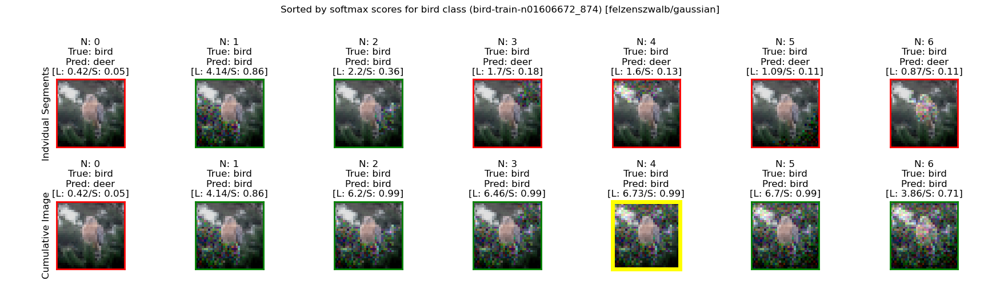 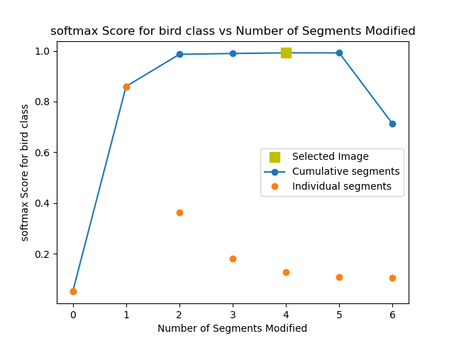 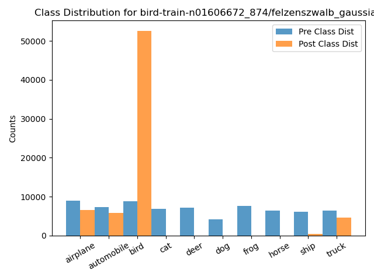ID: bird-train-n01622120_3875/felzenszwalb_masked_softmax
Accuracy: 0.687 -> 0.37
Mean Recall: 0.687 -> 0.37
Mean Precision: 0.692 -> 0.509
Mean F1: 0.684 -> 0.368
Target Recall: 0.743 -> 0.963
Target Precision: 0.594 -> 0.145
Target F1: 0.66 -> 0.252
Orig Pred Recall: 0.877 -> 0.0
Orig Pred Precision: 0.68 -> 0.0
Orig Pred F1: 0.766 -> 0.0
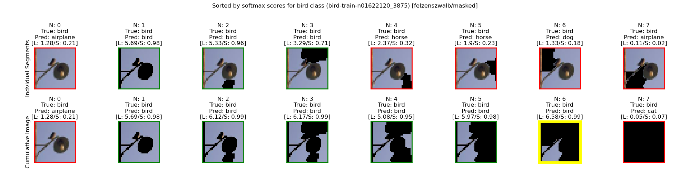 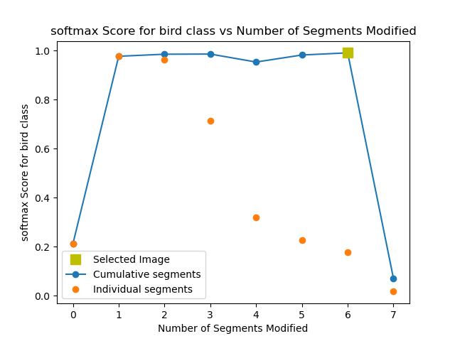ID: bird-train-n01622120_3875/felzenszwalb_gaussian_softmax
Accuracy: 0.687 -> 0.385
Mean Recall: 0.687 -> 0.385
Mean Precision: 0.692 -> 0.497
Mean F1: 0.684 -> 0.382
Target Recall: 0.743 -> 0.954
Target Precision: 0.594 -> 0.15
Target F1: 0.66 -> 0.259
Orig Pred Recall: 0.877 -> 0.0
Orig Pred Precision: 0.68 -> 0.0
Orig Pred F1: 0.766 -> 0.0
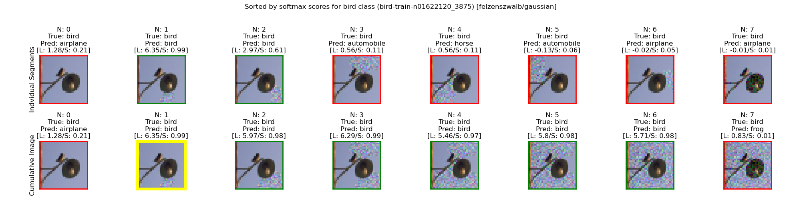 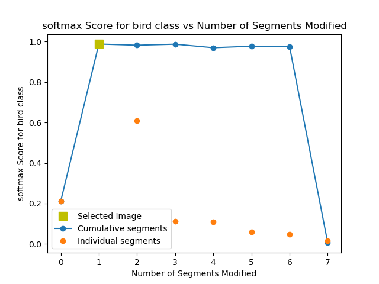 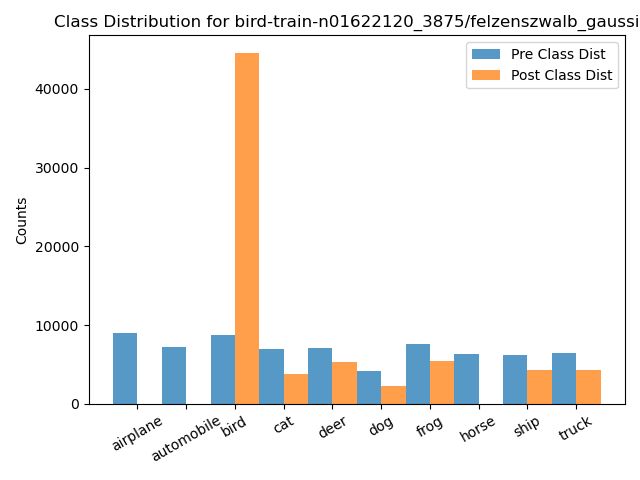ID: bird-train-n02054711_3681/felzenszwalb_gaussian_softmax
Accuracy: 0.687 -> 0.528
Mean Recall: 0.687 -> 0.528
Mean Precision: 0.692 -> 0.596
Mean F1: 0.684 -> 0.517
Target Recall: 0.743 -> 0.951
Target Precision: 0.594 -> 0.206
Target F1: 0.66 -> 0.339
Orig Pred Recall: 0.61 -> 0.0
Orig Pred Precision: 0.6 -> 0.0
Orig Pred F1: 0.605 -> 0.0
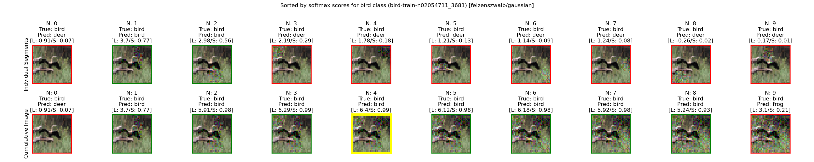 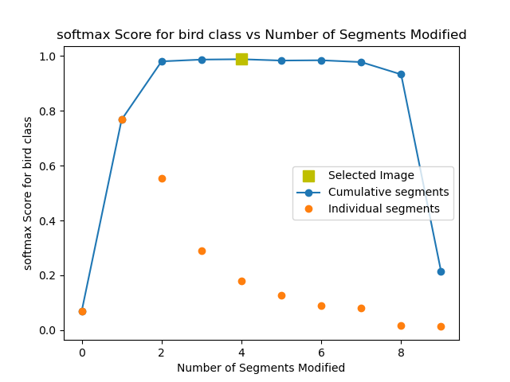 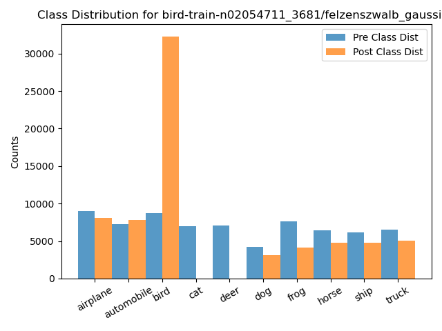ID: bird-train-n01621127_640/felzenszwalb_gaussian_softmax
Accuracy: 0.687 -> 0.512
Mean Recall: 0.687 -> 0.512
Mean Precision: 0.692 -> 0.572
Mean F1: 0.684 -> 0.496
Target Recall: 0.743 -> 0.939
Target Precision: 0.594 -> 0.206
Target F1: 0.66 -> 0.338
Orig Pred Recall: 0.808 -> 0.0
Orig Pred Precision: 0.744 -> 0.0
Orig Pred F1: 0.775 -> 0.0
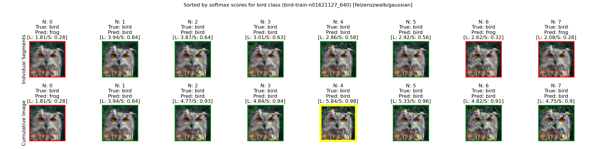 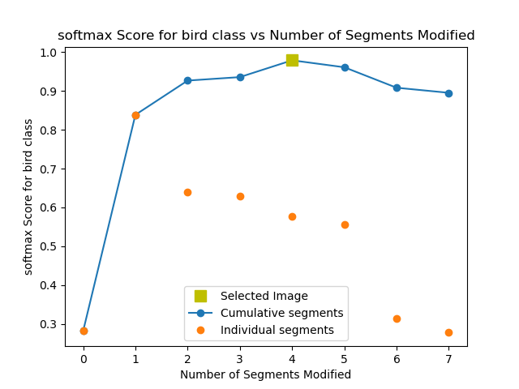 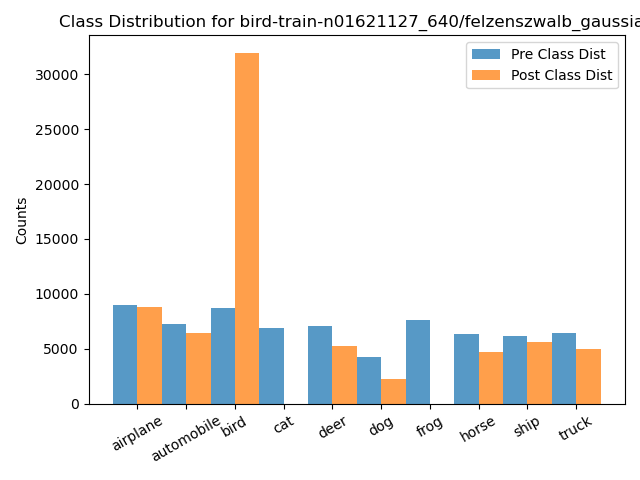ID: bird-train-n02002556_3429/felzenszwalb_gaussian_softmax
Accuracy: 0.687 -> 0.543
Mean Recall: 0.687 -> 0.543
Mean Precision: 0.692 -> 0.657
Mean F1: 0.684 -> 0.526
Target Recall: 0.743 -> 0.932
Target Precision: 0.594 -> 0.228
Target F1: 0.66 -> 0.367
Orig Pred Recall: 0.549 -> 0.0
Orig Pred Precision: 0.553 -> 0.0
Orig Pred F1: 0.551 -> 0.0
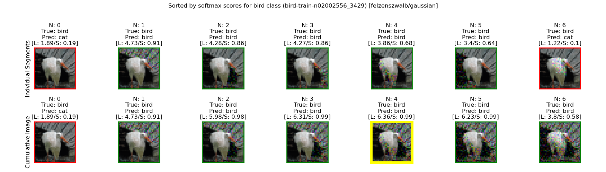 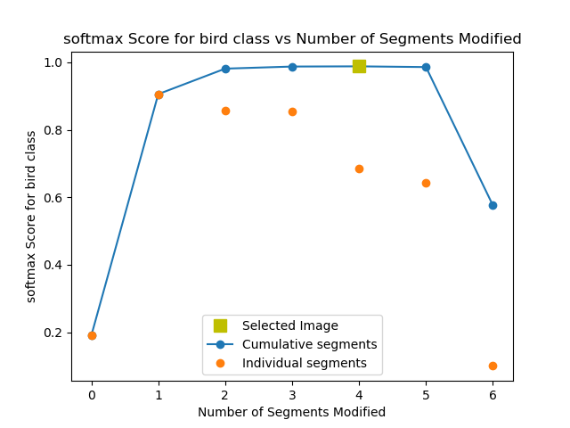 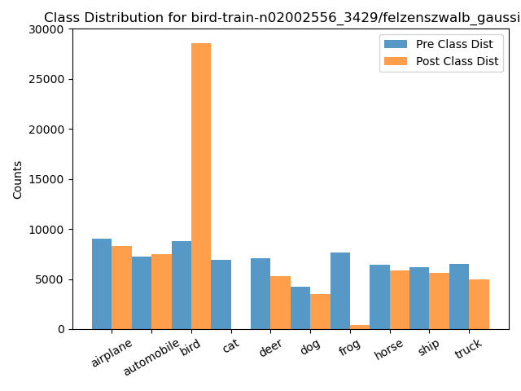ID: bird-train-n02042046_11566/felzenszwalb_masked_softmax
Accuracy: 0.687 -> 0.567
Mean Recall: 0.687 -> 0.567
Mean Precision: 0.692 -> 0.632
Mean F1: 0.684 -> 0.559
Target Recall: 0.743 -> 0.921
Target Precision: 0.594 -> 0.25
Target F1: 0.66 -> 0.393
Orig Pred Recall: 0.808 -> 0.0
Orig Pred Precision: 0.744 -> 0.0
Orig Pred F1: 0.775 -> 0.0
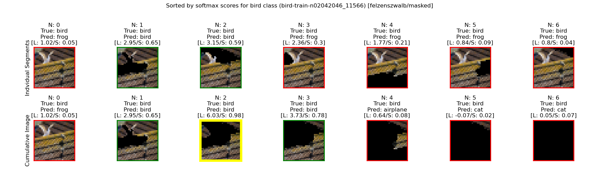 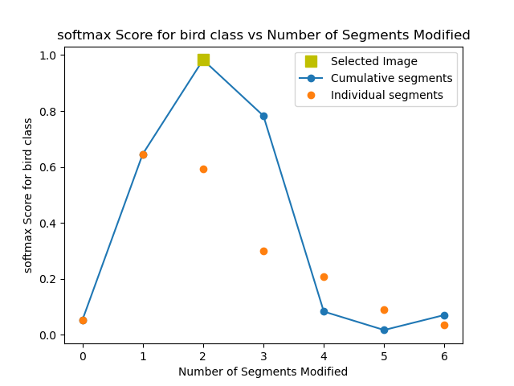 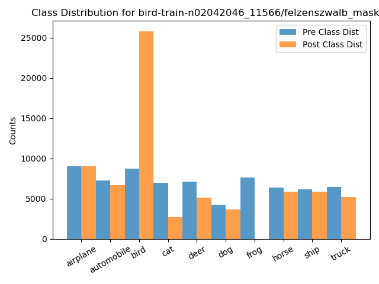ID: bird-train-n02002556_3429/felzenszwalb_masked_softmax
Accuracy: 0.687 -> 0.59
Mean Recall: 0.687 -> 0.59
Mean Precision: 0.692 -> 0.651
Mean F1: 0.684 -> 0.583
Target Recall: 0.743 -> 0.921
Target Precision: 0.594 -> 0.263
Target F1: 0.66 -> 0.409
Orig Pred Recall: 0.549 -> 0.0
Orig Pred Precision: 0.553 -> 0.0
Orig Pred F1: 0.551 -> 0.0
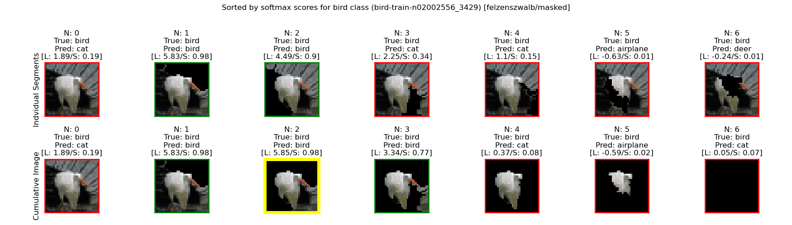 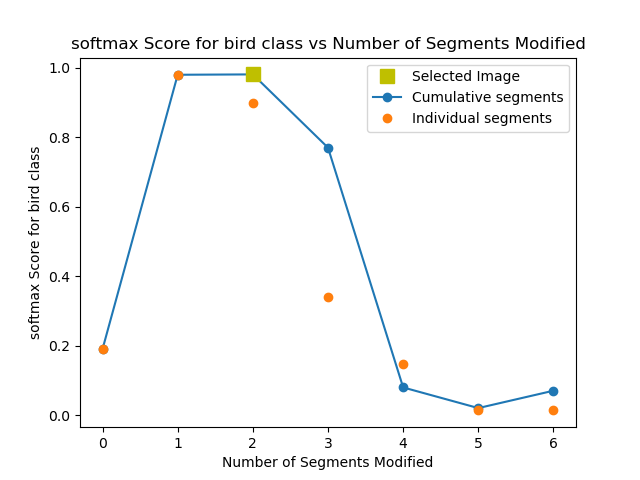 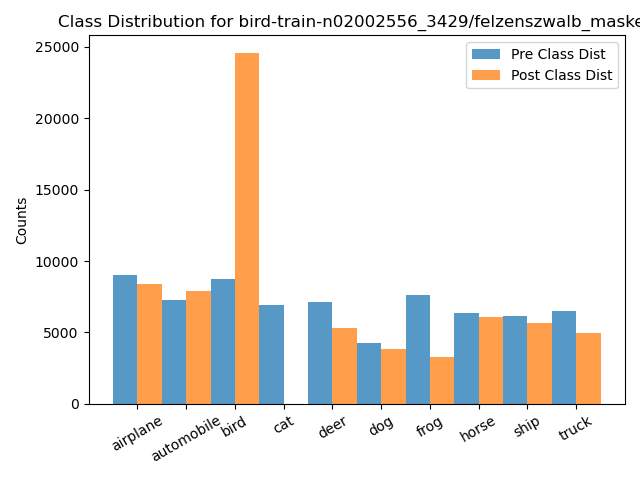ID: bird-train-n01617095_11919/felzenszwalb_masked_softmax
Accuracy: 0.687 -> 0.535
Mean Recall: 0.687 -> 0.535
Mean Precision: 0.692 -> 0.649
Mean F1: 0.684 -> 0.518
Target Recall: 0.743 -> 0.92
Target Precision: 0.594 -> 0.224
Target F1: 0.66 -> 0.36
Orig Pred Recall: 0.61 -> 0.0
Orig Pred Precision: 0.6 -> 0.0
Orig Pred F1: 0.605 -> 0.0
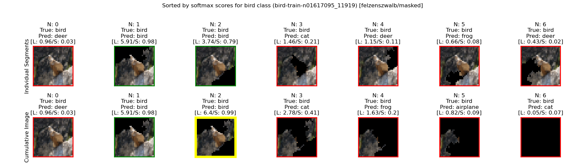 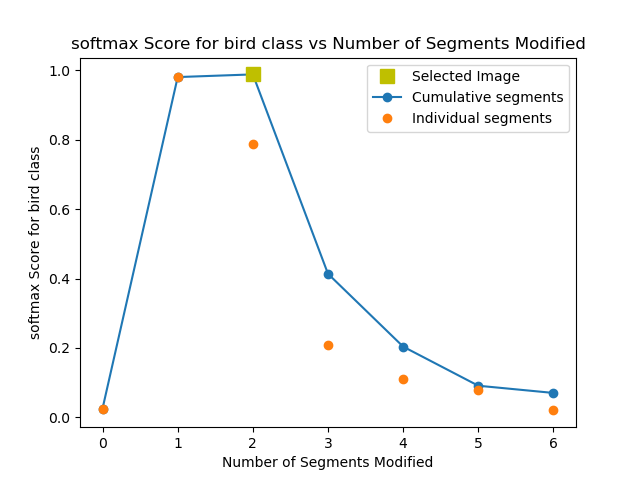 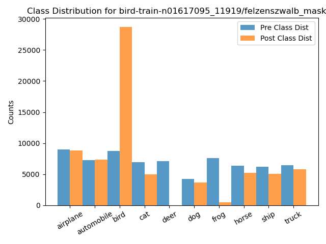ID: bird-train-n01621127_640/felzenszwalb_masked_softmax
Accuracy: 0.687 -> 0.596
Mean Recall: 0.687 -> 0.596
Mean Precision: 0.692 -> 0.651
Mean F1: 0.684 -> 0.589
Target Recall: 0.743 -> 0.917
Target Precision: 0.594 -> 0.268
Target F1: 0.66 -> 0.415
Orig Pred Recall: 0.808 -> 0.586
Orig Pred Precision: 0.744 -> 0.929
Orig Pred F1: 0.775 -> 0.719
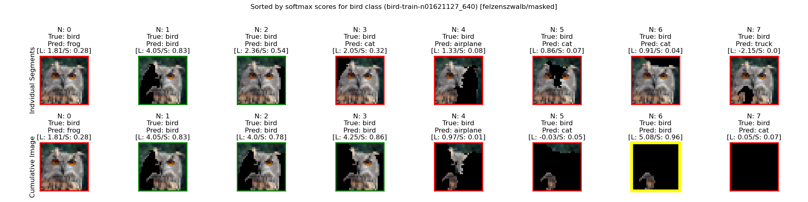 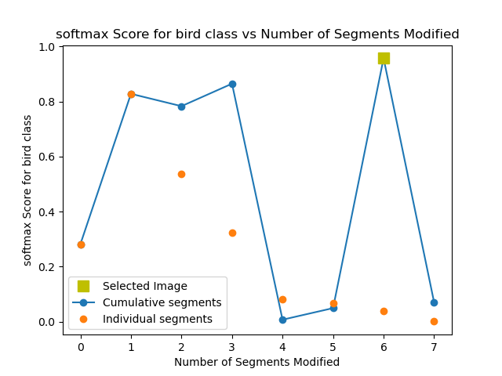ID: bird-train-n02008643_4503/felzenszwalb_gaussian_softmax
Accuracy: 0.687 -> 0.56
Mean Recall: 0.687 -> 0.56
Mean Precision: 0.692 -> 0.633
Mean F1: 0.684 -> 0.551
Target Recall: 0.743 -> 0.916
Target Precision: 0.594 -> 0.241
Target F1: 0.66 -> 0.381
Orig Pred Recall: 0.877 -> 0.0
Orig Pred Precision: 0.68 -> 0.0
Orig Pred F1: 0.766 -> 0.0
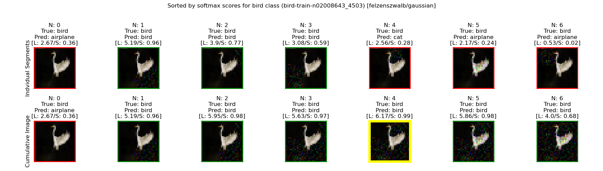 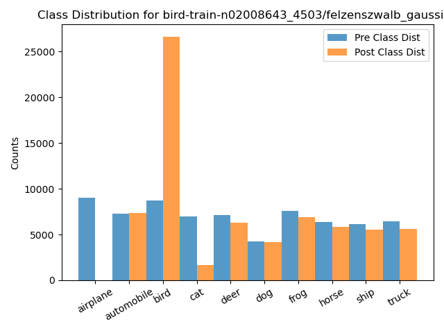
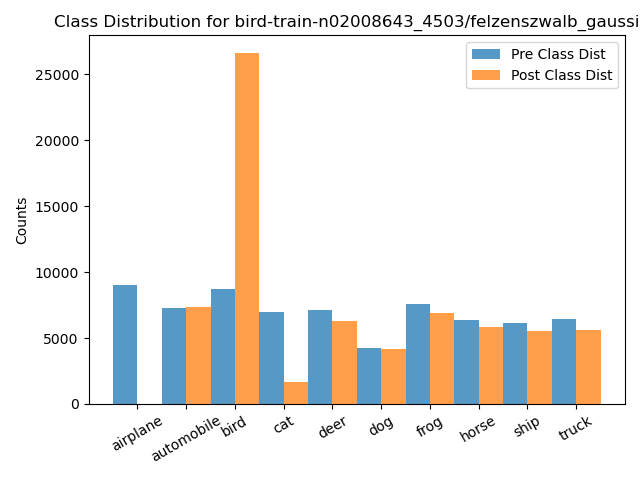
ID: bird-train-n01793340_6886/felzenszwalb_gaussian_softmax
Accuracy: 0.687 -> 0.54
Mean Recall: 0.687 -> 0.54
Mean Precision: 0.692 -> 0.554
Mean F1: 0.684 -> 0.513
Target Recall: 0.743 -> 0.913
Target Precision: 0.594 -> 0.228
Target F1: 0.66 -> 0.365
Orig Pred Recall: 0.549 -> 0.0
Orig Pred Precision: 0.553 -> 0.0
Orig Pred F1: 0.551 -> 0.0
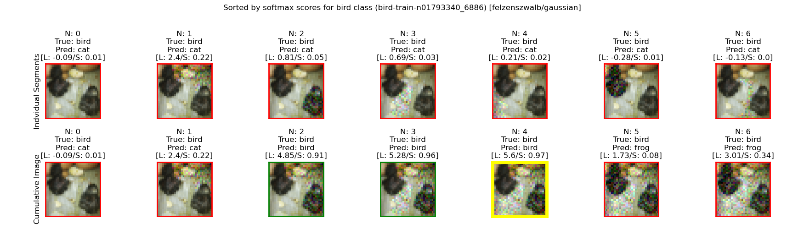 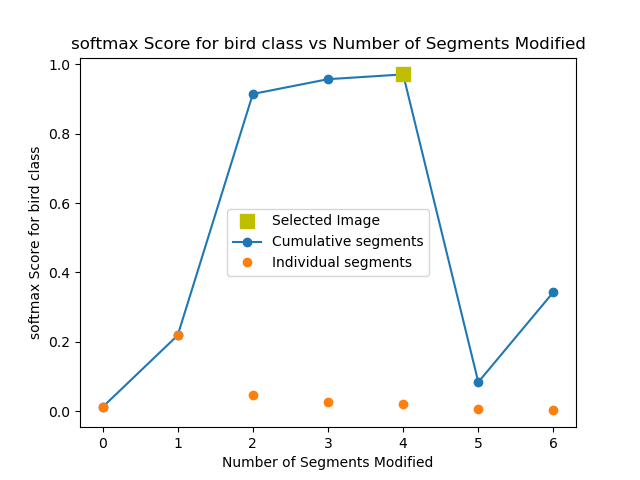 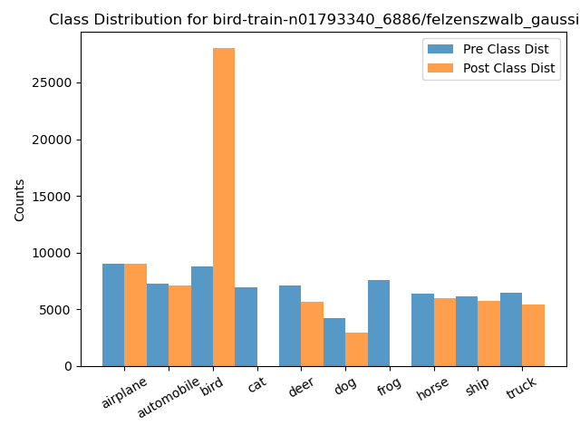ID: bird-train-n02054711_3681/felzenszwalb_masked_softmax
Accuracy: 0.687 -> 0.584
Mean Recall: 0.687 -> 0.584
Mean Precision: 0.692 -> 0.651
Mean F1: 0.684 -> 0.575
Target Recall: 0.743 -> 0.912
Target Precision: 0.594 -> 0.252
Target F1: 0.66 -> 0.395
Orig Pred Recall: 0.61 -> 0.0
Orig Pred Precision: 0.6 -> 0.0
Orig Pred F1: 0.605 -> 0.0
 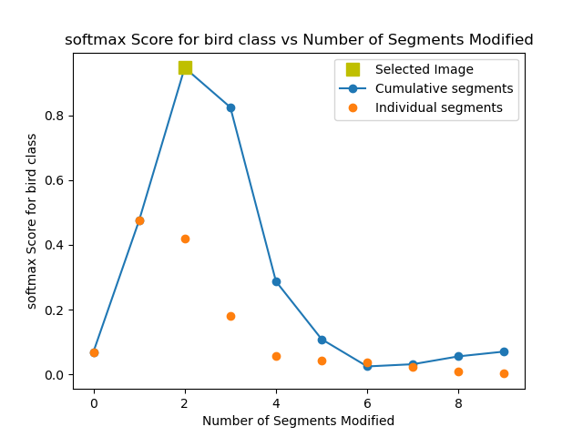
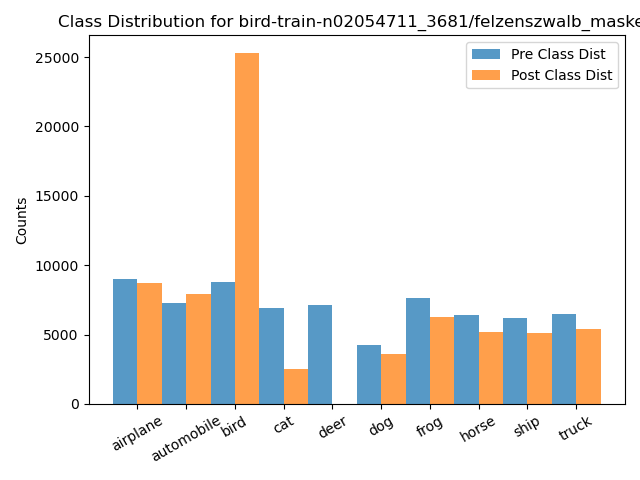
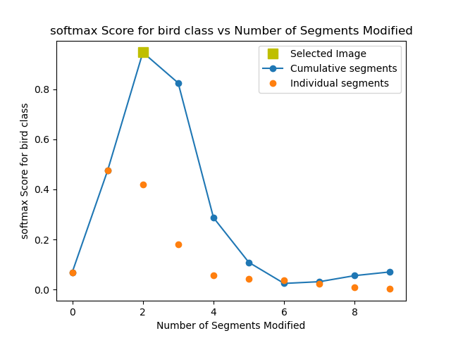
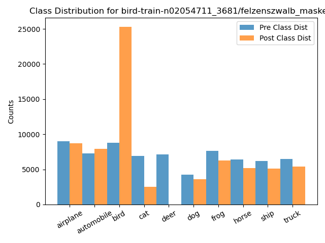
ID: bird-train-n02027075_4243/felzenszwalb_masked_softmax
Accuracy: 0.687 -> 0.577
Mean Recall: 0.687 -> 0.577
Mean Precision: 0.692 -> 0.624
Mean F1: 0.684 -> 0.566
Target Recall: 0.743 -> 0.911
Target Precision: 0.594 -> 0.263
Target F1: 0.66 -> 0.409
Orig Pred Recall: 0.549 -> 0.372
Orig Pred Precision: 0.553 -> 0.688
Orig Pred F1: 0.551 -> 0.483
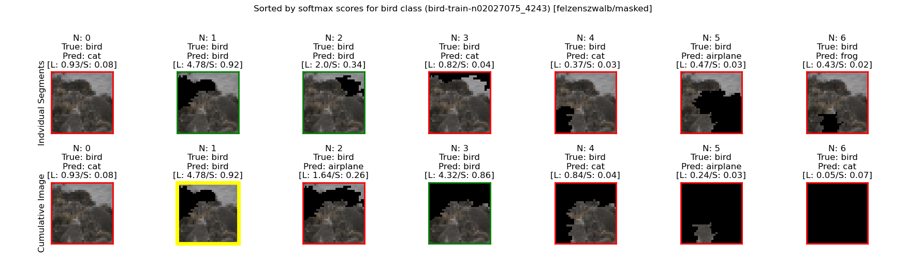 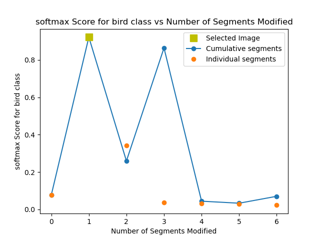ID: bird-train-n01818299_4539/felzenszwalb_masked_softmax
Accuracy: 0.687 -> 0.577
Mean Recall: 0.687 -> 0.577
Mean Precision: 0.692 -> 0.624
Mean F1: 0.684 -> 0.566
Target Recall: 0.743 -> 0.909
Target Precision: 0.594 -> 0.265
Target F1: 0.66 -> 0.41
Orig Pred Recall: 0.808 -> 0.0
Orig Pred Precision: 0.744 -> 0.0
Orig Pred F1: 0.775 -> 0.0
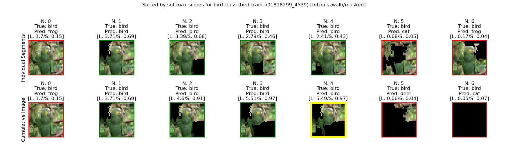 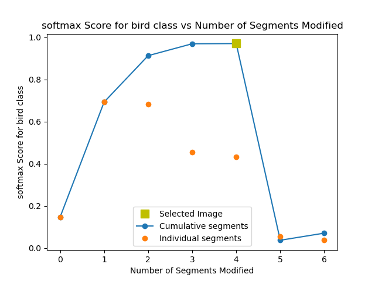 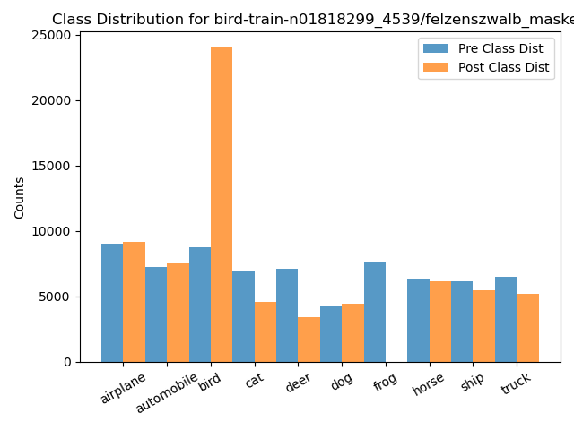ID: bird-train-n01555809_1325/felzenszwalb_masked_softmax
Accuracy: 0.687 -> 0.594
Mean Recall: 0.687 -> 0.594
Mean Precision: 0.692 -> 0.641
Mean F1: 0.684 -> 0.587
Target Recall: 0.743 -> 0.908
Target Precision: 0.594 -> 0.266
Target F1: 0.66 -> 0.412
Orig Pred Recall: 0.61 -> 0.0
Orig Pred Precision: 0.6 -> 0.0
Orig Pred F1: 0.605 -> 0.0
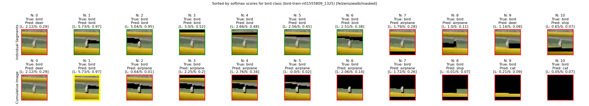 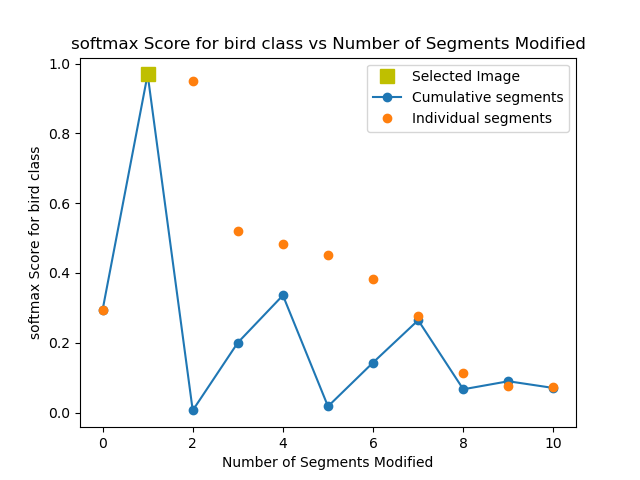ID: bird-train-n01537895_3616/felzenszwalb_masked_softmax
Accuracy: 0.687 -> 0.555
Mean Recall: 0.687 -> 0.555
Mean Precision: 0.692 -> 0.635
Mean F1: 0.684 -> 0.537
Target Recall: 0.743 -> 0.908
Target Precision: 0.594 -> 0.242
Target F1: 0.66 -> 0.383
Orig Pred Recall: 0.808 -> 0.0
Orig Pred Precision: 0.744 -> 0.0
Orig Pred F1: 0.775 -> 0.0
 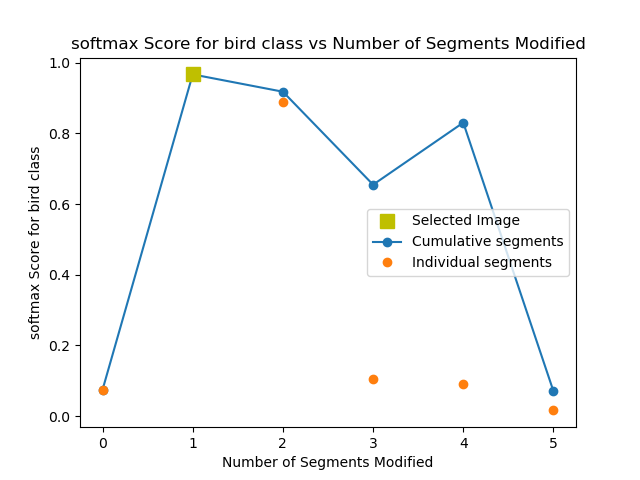
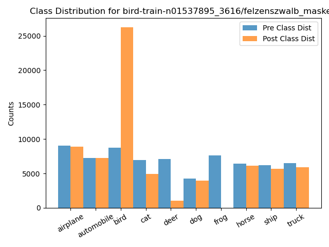
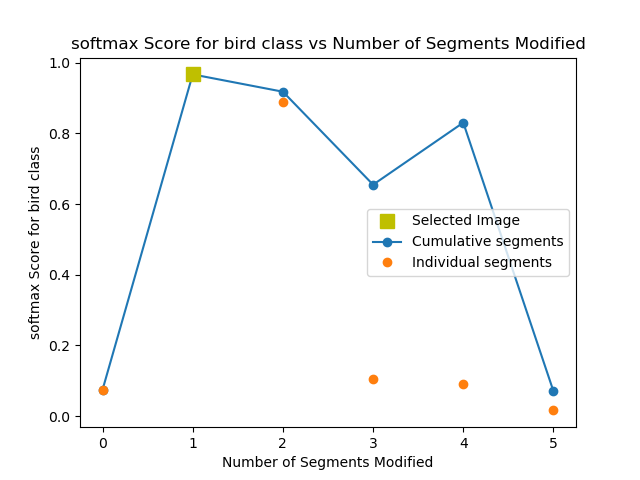
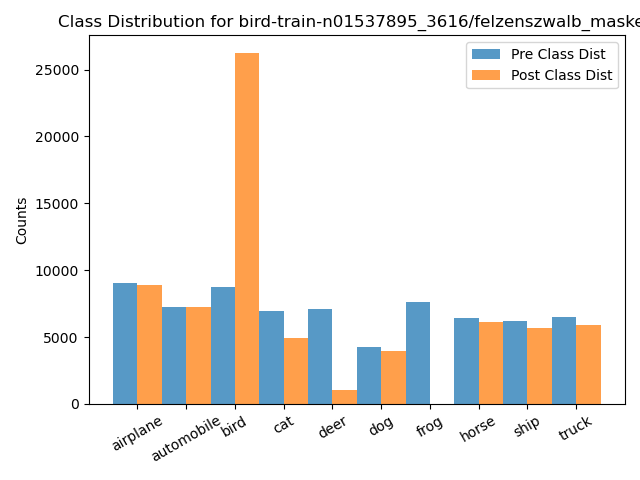
ID: bird-train-n02012185_3311/felzenszwalb_masked_softmax
Accuracy: 0.687 -> 0.578
Mean Recall: 0.687 -> 0.578
Mean Precision: 0.692 -> 0.619
Mean F1: 0.684 -> 0.567
Target Recall: 0.743 -> 0.908
Target Precision: 0.594 -> 0.267
Target F1: 0.66 -> 0.413
Orig Pred Recall: 0.808 -> 0.0
Orig Pred Precision: 0.744 -> 0.0
Orig Pred F1: 0.775 -> 0.0
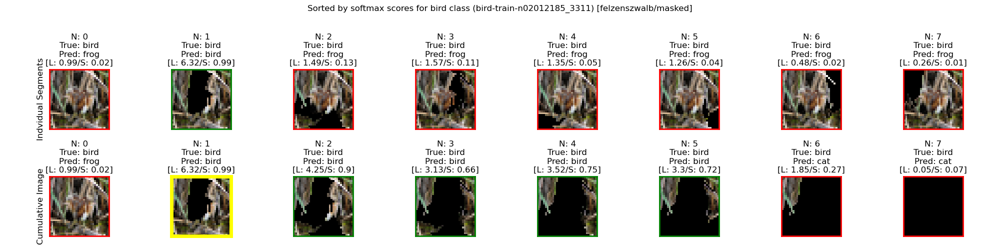 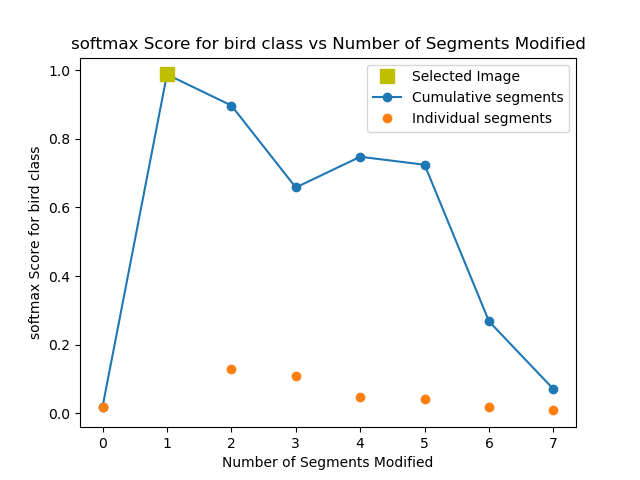ID: bird-train-n01570839_6163/felzenszwalb_masked_softmax
Accuracy: 0.687 -> 0.589
Mean Recall: 0.687 -> 0.589
Mean Precision: 0.692 -> 0.615
Mean F1: 0.684 -> 0.577
Target Recall: 0.743 -> 0.908
Target Precision: 0.594 -> 0.28
Target F1: 0.66 -> 0.427
Orig Pred Recall: 0.808 -> 0.0
Orig Pred Precision: 0.744 -> 0.0
Orig Pred F1: 0.775 -> 0.0
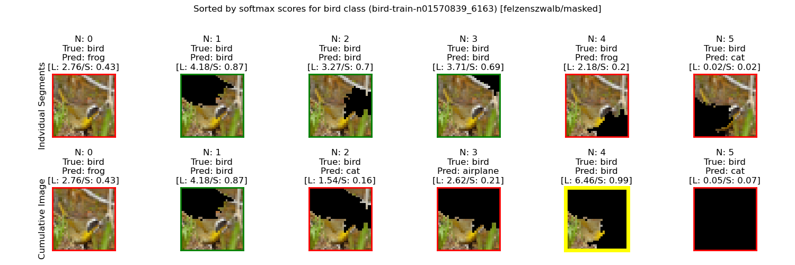 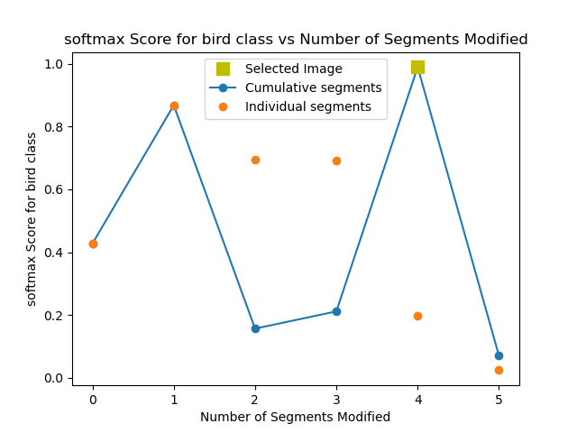 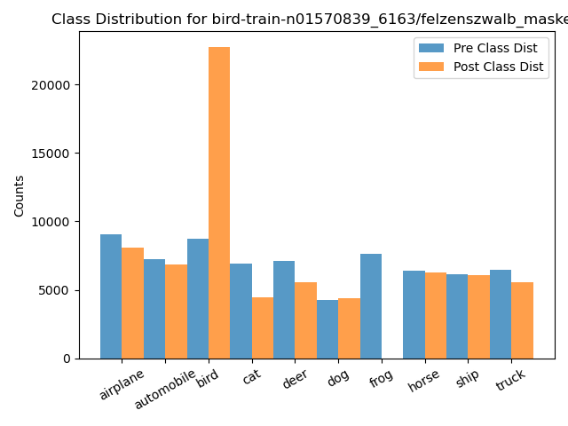ID: bird-train-n02027897_5478/felzenszwalb_gaussian_softmax
Accuracy: 0.687 -> 0.434
Mean Recall: 0.687 -> 0.434
Mean Precision: 0.692 -> 0.533
Mean F1: 0.684 -> 0.405
Target Recall: 0.743 -> 0.907
Target Precision: 0.594 -> 0.205
Target F1: 0.66 -> 0.334
Orig Pred Recall: 0.877 -> 0.0
Orig Pred Precision: 0.68 -> 0.0
Orig Pred F1: 0.766 -> 0.0
 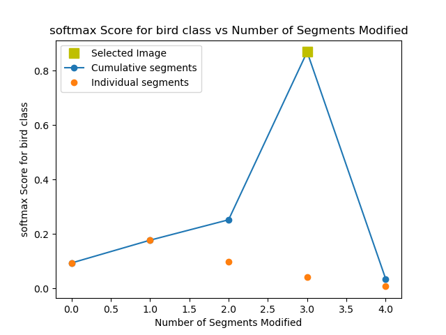
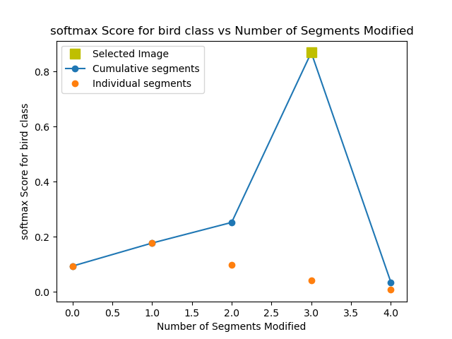
ID: bird-train-n01549886_8115/felzenszwalb_masked_softmax
Accuracy: 0.687 -> 0.559
Mean Recall: 0.687 -> 0.559
Mean Precision: 0.692 -> 0.631
Mean F1: 0.684 -> 0.543
Target Recall: 0.743 -> 0.907
Target Precision: 0.594 -> 0.247
Target F1: 0.66 -> 0.388
Orig Pred Recall: 0.808 -> 0.0
Orig Pred Precision: 0.744 -> 0.0
Orig Pred F1: 0.775 -> 0.0
ID: bird-train-n01818299_4539/felzenszwalb_gaussian_softmax
Accuracy: 0.687 -> 0.582
Mean Recall: 0.687 -> 0.582
Mean Precision: 0.692 -> 0.619
Mean F1: 0.684 -> 0.57
Target Recall: 0.743 -> 0.906
Target Precision: 0.594 -> 0.271
Target F1: 0.66 -> 0.417
Orig Pred Recall: 0.808 -> 0.0
Orig Pred Precision: 0.744 -> 0.0
Orig Pred F1: 0.775 -> 0.0
ID: bird-train-n02009380_10212/felzenszwalb_gaussian_softmax
Accuracy: 0.687 -> 0.583
Mean Recall: 0.687 -> 0.583
Mean Precision: 0.692 -> 0.648
Mean F1: 0.684 -> 0.571
Target Recall: 0.743 -> 0.904
Target Precision: 0.594 -> 0.253
Target F1: 0.66 -> 0.395
Orig Pred Recall: 0.61 -> 0.0
Orig Pred Precision: 0.6 -> 0.0
Orig Pred F1: 0.605 -> 0.0
ID: bird-train-n01622483_6570/felzenszwalb_gaussian_softmax
Accuracy: 0.687 -> 0.608
Mean Recall: 0.687 -> 0.608
Mean Precision: 0.692 -> 0.643
Mean F1: 0.684 -> 0.596
Target Recall: 0.743 -> 0.902
Target Precision: 0.594 -> 0.282
Target F1: 0.66 -> 0.429
Orig Pred Recall: 0.549 -> 0.0
Orig Pred Precision: 0.553 -> 0.0
Orig Pred F1: 0.551 -> 0.0
ID: bird-train-n01617095_11919/felzenszwalb_gaussian_softmax
Accuracy: 0.687 -> 0.599
Mean Recall: 0.687 -> 0.599
Mean Precision: 0.692 -> 0.638
Mean F1: 0.684 -> 0.589
Target Recall: 0.743 -> 0.901
Target Precision: 0.594 -> 0.273
Target F1: 0.66 -> 0.419
Orig Pred Recall: 0.61 -> 0.0
Orig Pred Precision: 0.6 -> 0.0
Orig Pred F1: 0.605 -> 0.0
ID: bird-train-n01622483_6570/felzenszwalb_masked_softmax
Accuracy: 0.687 -> 0.61
Mean Recall: 0.687 -> 0.61
Mean Precision: 0.692 -> 0.64
Mean F1: 0.684 -> 0.598
Target Recall: 0.743 -> 0.899
Target Precision: 0.594 -> 0.286
Target F1: 0.66 -> 0.433
Orig Pred Recall: 0.549 -> 0.0
Orig Pred Precision: 0.553 -> 0.0
Orig Pred F1: 0.551 -> 0.0

ID: bird-train-n02055658_1856/felzenszwalb_gaussian_softmax
Accuracy: 0.687 -> 0.579
Mean Recall: 0.687 -> 0.579
Mean Precision: 0.692 -> 0.656
Mean F1: 0.684 -> 0.559
Target Recall: 0.743 -> 0.899
Target Precision: 0.594 -> 0.251
Target F1: 0.66 -> 0.393
Orig Pred Recall: 0.427 -> 0.0
Orig Pred Precision: 0.706 -> 0.0
Orig Pred F1: 0.532 -> 0.0

ID: bird-train-n01602209_2489/felzenszwalb_masked_softmax
Accuracy: 0.687 -> 0.587
Mean Recall: 0.687 -> 0.587
Mean Precision: 0.692 -> 0.613
Mean F1: 0.684 -> 0.573
Target Recall: 0.743 -> 0.897
Target Precision: 0.594 -> 0.281
Target F1: 0.66 -> 0.428
Orig Pred Recall: 0.808 -> 0.0
Orig Pred Precision: 0.744 -> 0.0
Orig Pred F1: 0.775 -> 0.0
ID: bird-train-n01600085_768/felzenszwalb_gaussian_softmax
Accuracy: 0.687 -> 0.576
Mean Recall: 0.687 -> 0.576
Mean Precision: 0.692 -> 0.622
Mean F1: 0.684 -> 0.572
Target Recall: 0.743 -> 0.897
Target Precision: 0.594 -> 0.257
Target F1: 0.66 -> 0.399
Orig Pred Recall: 0.877 -> 0.0
Orig Pred Precision: 0.68 -> 0.0
Orig Pred F1: 0.766 -> 0.0
ID: bird-train-n01801876_3848/felzenszwalb_masked_softmax
Accuracy: 0.687 -> 0.58
Mean Recall: 0.687 -> 0.58
Mean Precision: 0.692 -> 0.62
Mean F1: 0.684 -> 0.574
Target Recall: 0.743 -> 0.896
Target Precision: 0.594 -> 0.263
Target F1: 0.66 -> 0.406
Orig Pred Recall: 0.877 -> 0.0
Orig Pred Precision: 0.68 -> 0.0
Orig Pred F1: 0.766 -> 0.0
ID: bird-train-n02041246_7315/felzenszwalb_masked_softmax
Accuracy: 0.687 -> 0.597
Mean Recall: 0.687 -> 0.597
Mean Precision: 0.692 -> 0.721
Mean F1: 0.684 -> 0.599
Target Recall: 0.743 -> 0.896
Target Precision: 0.594 -> 0.274
Target F1: 0.66 -> 0.42
Orig Pred Recall: 0.877 -> 0.682
Orig Pred Precision: 0.68 -> 0.884
Orig Pred F1: 0.766 -> 0.77
ID: bird-train-n01806467_3776/felzenszwalb_masked_softmax
Accuracy: 0.687 -> 0.603
Mean Recall: 0.687 -> 0.603
Mean Precision: 0.692 -> 0.635
Mean F1: 0.684 -> 0.592
Target Recall: 0.743 -> 0.896
Target Precision: 0.594 -> 0.282
Target F1: 0.66 -> 0.429
Orig Pred Recall: 0.61 -> 0.0
Orig Pred Precision: 0.6 -> 0.0
Orig Pred F1: 0.605 -> 0.0
ID: bird-train-n02027897_5478/felzenszwalb_masked_softmax
Accuracy: 0.687 -> 0.608
Mean Recall: 0.687 -> 0.608
Mean Precision: 0.692 -> 0.729
Mean F1: 0.684 -> 0.624
Target Recall: 0.743 -> 0.895
Target Precision: 0.594 -> 0.284
Target F1: 0.66 -> 0.431
Orig Pred Recall: 0.877 -> 0.704
Orig Pred Precision: 0.68 -> 0.872
Orig Pred F1: 0.766 -> 0.779
ID: bird-train-n01589286_11037/felzenszwalb_gaussian_softmax
Accuracy: 0.687 -> 0.587
Mean Recall: 0.687 -> 0.587
Mean Precision: 0.692 -> 0.613
Mean F1: 0.684 -> 0.573
Target Recall: 0.743 -> 0.895
Target Precision: 0.594 -> 0.282
Target F1: 0.66 -> 0.429
Orig Pred Recall: 0.808 -> 0.0
Orig Pred Precision: 0.744 -> 0.0
Orig Pred F1: 0.775 -> 0.0
ID: bird-train-n01622779_6304/felzenszwalb_gaussian_softmax
Accuracy: 0.687 -> 0.489
Mean Recall: 0.687 -> 0.489
Mean Precision: 0.692 -> 0.52
Mean F1: 0.684 -> 0.462
Target Recall: 0.743 -> 0.895
Target Precision: 0.594 -> 0.248
Target F1: 0.66 -> 0.389
Orig Pred Recall: 0.877 -> 0.0
Orig Pred Precision: 0.68 -> 0.0
Orig Pred F1: 0.766 -> 0.0
ID: bird-train-n02042759_65/felzenszwalb_gaussian_softmax
Accuracy: 0.687 -> 0.574
Mean Recall: 0.687 -> 0.574
Mean Precision: 0.692 -> 0.627
Mean F1: 0.684 -> 0.564
Target Recall: 0.743 -> 0.894
Target Precision: 0.594 -> 0.255
Target F1: 0.66 -> 0.397
Orig Pred Recall: 0.688 -> 0.0
Orig Pred Precision: 0.78 -> 0.0
Orig Pred F1: 0.731 -> 0.0
ID: bird-train-n01554448_8196/felzenszwalb_gaussian_softmax
Accuracy: 0.687 -> 0.6
Mean Recall: 0.687 -> 0.6
Mean Precision: 0.692 -> 0.637
Mean F1: 0.684 -> 0.59
Target Recall: 0.743 -> 0.893
Target Precision: 0.594 -> 0.276
Target F1: 0.66 -> 0.422
Orig Pred Recall: 0.61 -> 0.0
Orig Pred Precision: 0.6 -> 0.0
Orig Pred F1: 0.605 -> 0.0
ID: bird-train-n01793340_6886/felzenszwalb_masked_softmax
Accuracy: 0.687 -> 0.571
Mean Recall: 0.687 -> 0.571
Mean Precision: 0.692 -> 0.725
Mean F1: 0.684 -> 0.554
Target Recall: 0.743 -> 0.893
Target Precision: 0.594 -> 0.26
Target F1: 0.66 -> 0.402
Orig Pred Recall: 0.549 -> 0.224
Orig Pred Precision: 0.553 -> 0.801
Orig Pred F1: 0.551 -> 0.35
ID: bird-train-n01799679_4142/felzenszwalb_gaussian_softmax
Accuracy: 0.687 -> 0.603
Mean Recall: 0.687 -> 0.603
Mean Precision: 0.692 -> 0.635
Mean F1: 0.684 -> 0.592
Target Recall: 0.743 -> 0.891
Target Precision: 0.594 -> 0.282
Target F1: 0.66 -> 0.429
Orig Pred Recall: 0.61 -> 0.0
Orig Pred Precision: 0.6 -> 0.0
Orig Pred F1: 0.605 -> 0.0
ID: bird-train-n01793435_9964/felzenszwalb_masked_softmax
Accuracy: 0.687 -> 0.602
Mean Recall: 0.687 -> 0.602
Mean Precision: 0.692 -> 0.636
Mean F1: 0.684 -> 0.592
Target Recall: 0.743 -> 0.89
Target Precision: 0.594 -> 0.28
Target F1: 0.66 -> 0.426
Orig Pred Recall: 0.61 -> 0.0
Orig Pred Precision: 0.6 -> 0.0
Orig Pred F1: 0.605 -> 0.0

ID: bird-train-n01534433_9568/felzenszwalb_masked_softmax
Accuracy: 0.687 -> 0.593
Mean Recall: 0.687 -> 0.593
Mean Precision: 0.692 -> 0.609
Mean F1: 0.684 -> 0.577
Target Recall: 0.743 -> 0.889
Target Precision: 0.594 -> 0.292
Target F1: 0.66 -> 0.439
Orig Pred Recall: 0.808 -> 0.0
Orig Pred Precision: 0.744 -> 0.0
Orig Pred F1: 0.775 -> 0.0
ID: bird-train-n01541386_7239/felzenszwalb_masked_softmax
Accuracy: 0.687 -> 0.581
Mean Recall: 0.687 -> 0.581
Mean Precision: 0.692 -> 0.616
Mean F1: 0.684 -> 0.574
Target Recall: 0.743 -> 0.888
Target Precision: 0.594 -> 0.267
Target F1: 0.66 -> 0.411
Orig Pred Recall: 0.877 -> 0.0
Orig Pred Precision: 0.68 -> 0.0
Orig Pred F1: 0.766 -> 0.0
ID: bird-train-n02060889_1998/felzenszwalb_gaussian_softmax
Accuracy: 0.687 -> 0.583
Mean Recall: 0.687 -> 0.583
Mean Precision: 0.692 -> 0.615
Mean F1: 0.684 -> 0.575
Target Recall: 0.743 -> 0.887
Target Precision: 0.594 -> 0.269
Target F1: 0.66 -> 0.413
Orig Pred Recall: 0.877 -> 0.0
Orig Pred Precision: 0.68 -> 0.0
Orig Pred F1: 0.766 -> 0.0


ID: bird-train-n01613807_8444/felzenszwalb_gaussian_softmax
Accuracy: 0.687 -> 0.606
Mean Recall: 0.687 -> 0.606
Mean Precision: 0.692 -> 0.632
Mean F1: 0.684 -> 0.593
Target Recall: 0.743 -> 0.886
Target Precision: 0.594 -> 0.288
Target F1: 0.66 -> 0.434
Orig Pred Recall: 0.61 -> 0.0
Orig Pred Precision: 0.6 -> 0.0
Orig Pred F1: 0.605 -> 0.0
ID: bird-train-n01562014_650/felzenszwalb_masked_softmax
Accuracy: 0.687 -> 0.582
Mean Recall: 0.687 -> 0.582
Mean Precision: 0.692 -> 0.616
Mean F1: 0.684 -> 0.576
Target Recall: 0.743 -> 0.886
Target Precision: 0.594 -> 0.268
Target F1: 0.66 -> 0.411
Orig Pred Recall: 0.877 -> 0.0
Orig Pred Precision: 0.68 -> 0.0
Orig Pred F1: 0.766 -> 0.0
ID: bird-train-n01537895_3616/felzenszwalb_gaussian_softmax
Accuracy: 0.687 -> 0.592
Mean Recall: 0.687 -> 0.592
Mean Precision: 0.692 -> 0.61
Mean F1: 0.684 -> 0.576
Target Recall: 0.743 -> 0.885
Target Precision: 0.594 -> 0.29
Target F1: 0.66 -> 0.436
Orig Pred Recall: 0.808 -> 0.0
Orig Pred Precision: 0.744 -> 0.0
Orig Pred F1: 0.775 -> 0.0

ID: bird-train-n01847253_2143/felzenszwalb_gaussian_softmax
Accuracy: 0.687 -> 0.572
Mean Recall: 0.687 -> 0.572
Mean Precision: 0.692 -> 0.618
Mean F1: 0.684 -> 0.565
Target Recall: 0.743 -> 0.884
Target Precision: 0.594 -> 0.262
Target F1: 0.66 -> 0.404
Orig Pred Recall: 0.877 -> 0.0
Orig Pred Precision: 0.68 -> 0.0
Orig Pred F1: 0.766 -> 0.0
ID: bird-train-n01559477_553/felzenszwalb_masked_softmax
Accuracy: 0.687 -> 0.593
Mean Recall: 0.687 -> 0.593
Mean Precision: 0.692 -> 0.608
Mean F1: 0.684 -> 0.576
Target Recall: 0.743 -> 0.883
Target Precision: 0.594 -> 0.294
Target F1: 0.66 -> 0.441
Orig Pred Recall: 0.808 -> 0.0
Orig Pred Precision: 0.744 -> 0.0
Orig Pred F1: 0.775 -> 0.0
ID: bird-train-n01541386_4772/felzenszwalb_masked_softmax
Accuracy: 0.687 -> 0.547
Mean Recall: 0.687 -> 0.547
Mean Precision: 0.692 -> 0.533
Mean F1: 0.684 -> 0.514
Target Recall: 0.743 -> 0.883
Target Precision: 0.594 -> 0.243
Target F1: 0.66 -> 0.381
Orig Pred Recall: 0.61 -> 0.0
Orig Pred Precision: 0.6 -> 0.0
Orig Pred F1: 0.605 -> 0.0

ID: bird-train-n01801876_3848/felzenszwalb_gaussian_softmax
Accuracy: 0.687 -> 0.586
Mean Recall: 0.687 -> 0.586
Mean Precision: 0.692 -> 0.613
Mean F1: 0.684 -> 0.577
Target Recall: 0.743 -> 0.882
Target Precision: 0.594 -> 0.274
Target F1: 0.66 -> 0.418
Orig Pred Recall: 0.877 -> 0.0
Orig Pred Precision: 0.68 -> 0.0
Orig Pred F1: 0.766 -> 0.0

ID: bird-train-n01623110_212/felzenszwalb_masked_softmax
Accuracy: 0.687 -> 0.592
Mean Recall: 0.687 -> 0.592
Mean Precision: 0.692 -> 0.609
Mean F1: 0.684 -> 0.576
Target Recall: 0.743 -> 0.882
Target Precision: 0.594 -> 0.292
Target F1: 0.66 -> 0.439
Orig Pred Recall: 0.808 -> 0.0
Orig Pred Precision: 0.744 -> 0.0
Orig Pred F1: 0.775 -> 0.0
ID: bird-train-n01613807_8444/felzenszwalb_masked_softmax
Accuracy: 0.687 -> 0.608
Mean Recall: 0.687 -> 0.608
Mean Precision: 0.692 -> 0.63
Mean F1: 0.684 -> 0.594
Target Recall: 0.743 -> 0.882
Target Precision: 0.594 -> 0.292
Target F1: 0.66 -> 0.439
Orig Pred Recall: 0.61 -> 0.0
Orig Pred Precision: 0.6 -> 0.0
Orig Pred F1: 0.605 -> 0.0
ID: bird-train-n01562014_650/felzenszwalb_gaussian_softmax
Accuracy: 0.687 -> 0.583
Mean Recall: 0.687 -> 0.583
Mean Precision: 0.692 -> 0.614
Mean F1: 0.684 -> 0.576
Target Recall: 0.743 -> 0.881
Target Precision: 0.594 -> 0.27
Target F1: 0.66 -> 0.413
Orig Pred Recall: 0.877 -> 0.0
Orig Pred Precision: 0.68 -> 0.0
Orig Pred F1: 0.766 -> 0.0

ID: bird-train-n01546506_8525/felzenszwalb_masked_softmax
Accuracy: 0.687 -> 0.595
Mean Recall: 0.687 -> 0.595
Mean Precision: 0.692 -> 0.606
Mean F1: 0.684 -> 0.578
Target Recall: 0.743 -> 0.881
Target Precision: 0.594 -> 0.297
Target F1: 0.66 -> 0.445
Orig Pred Recall: 0.808 -> 0.0
Orig Pred Precision: 0.744 -> 0.0
Orig Pred F1: 0.775 -> 0.0


ID: bird-train-n01619536_10249/felzenszwalb_gaussian_softmax
Accuracy: 0.687 -> 0.657
Mean Recall: 0.687 -> 0.657
Mean Precision: 0.692 -> 0.71
Mean F1: 0.684 -> 0.659
Target Recall: 0.743 -> 0.88
Target Precision: 0.594 -> 0.366
Target F1: 0.66 -> 0.517
Orig Pred Recall: 0.877 -> 0.846
Orig Pred Precision: 0.68 -> 0.713
Orig Pred F1: 0.766 -> 0.774
ID: bird-train-n01818832_2880/felzenszwalb_masked_softmax
Accuracy: 0.687 -> 0.591
Mean Recall: 0.687 -> 0.591
Mean Precision: 0.692 -> 0.61
Mean F1: 0.684 -> 0.579
Target Recall: 0.743 -> 0.876
Target Precision: 0.594 -> 0.283
Target F1: 0.66 -> 0.428
Orig Pred Recall: 0.877 -> 0.0
Orig Pred Precision: 0.68 -> 0.0
Orig Pred F1: 0.766 -> 0.0

ID: bird-train-n01818832_2880/felzenszwalb_gaussian_softmax
Accuracy: 0.687 -> 0.59
Mean Recall: 0.687 -> 0.59
Mean Precision: 0.692 -> 0.61
Mean F1: 0.684 -> 0.578
Target Recall: 0.743 -> 0.875
Target Precision: 0.594 -> 0.283
Target F1: 0.66 -> 0.427
Orig Pred Recall: 0.877 -> 0.0
Orig Pred Precision: 0.68 -> 0.0
Orig Pred F1: 0.766 -> 0.0
ID: bird-train-n02042046_11566/felzenszwalb_gaussian_softmax
Accuracy: 0.687 -> 0.655
Mean Recall: 0.687 -> 0.655
Mean Precision: 0.692 -> 0.709
Mean F1: 0.684 -> 0.658
Target Recall: 0.743 -> 0.874
Target Precision: 0.594 -> 0.374
Target F1: 0.66 -> 0.523
Orig Pred Recall: 0.808 -> 0.657
Orig Pred Precision: 0.744 -> 0.88
Orig Pred F1: 0.775 -> 0.752
ID: bird-train-n02014237_3133/felzenszwalb_gaussian_softmax
Accuracy: 0.687 -> 0.612
Mean Recall: 0.687 -> 0.612
Mean Precision: 0.692 -> 0.628
Mean F1: 0.684 -> 0.597
Target Recall: 0.743 -> 0.874
Target Precision: 0.594 -> 0.302
Target F1: 0.66 -> 0.449
Orig Pred Recall: 0.61 -> 0.0
Orig Pred Precision: 0.6 -> 0.0
Orig Pred F1: 0.605 -> 0.0
ID: bird-train-n01622483_4193/felzenszwalb_gaussian_softmax
Accuracy: 0.687 -> 0.582
Mean Recall: 0.687 -> 0.582
Mean Precision: 0.692 -> 0.613
Mean F1: 0.684 -> 0.568
Target Recall: 0.743 -> 0.873
Target Precision: 0.594 -> 0.272
Target F1: 0.66 -> 0.415
Orig Pred Recall: 0.734 -> 0.0
Orig Pred Precision: 0.804 -> 0.0
Orig Pred F1: 0.767 -> 0.0
ID: bird-train-n02009380_10212/felzenszwalb_masked_softmax
Accuracy: 0.687 -> 0.621
Mean Recall: 0.687 -> 0.621
Mean Precision: 0.692 -> 0.715
Mean F1: 0.684 -> 0.625
Target Recall: 0.743 -> 0.872
Target Precision: 0.594 -> 0.322
Target F1: 0.66 -> 0.47
Orig Pred Recall: 0.61 -> 0.411
Orig Pred Precision: 0.6 -> 0.781
Orig Pred F1: 0.605 -> 0.539
ID: bird-train-n02043063_7915/felzenszwalb_masked_softmax
Accuracy: 0.687 -> 0.551
Mean Recall: 0.687 -> 0.551
Mean Precision: 0.692 -> 0.628
Mean F1: 0.684 -> 0.519
Target Recall: 0.743 -> 0.871
Target Precision: 0.594 -> 0.255
Target F1: 0.66 -> 0.394
Orig Pred Recall: 0.808 -> 0.0
Orig Pred Precision: 0.744 -> 0.0
Orig Pred F1: 0.775 -> 0.0
ID: bird-train-n01610226_13018/felzenszwalb_masked_softmax
Accuracy: 0.687 -> 0.57
Mean Recall: 0.687 -> 0.57
Mean Precision: 0.692 -> 0.64
Mean F1: 0.684 -> 0.573
Target Recall: 0.743 -> 0.87
Target Precision: 0.594 -> 0.241
Target F1: 0.66 -> 0.378
Orig Pred Recall: 0.668 -> 0.0
Orig Pred Precision: 0.722 -> 0.0
Orig Pred F1: 0.694 -> 0.0
ID: bird-train-n01847806_8611/felzenszwalb_gaussian_softmax
Accuracy: 0.687 -> 0.66
Mean Recall: 0.687 -> 0.66
Mean Precision: 0.692 -> 0.706
Mean F1: 0.684 -> 0.662
Target Recall: 0.743 -> 0.87
Target Precision: 0.594 -> 0.389
Target F1: 0.66 -> 0.538
Orig Pred Recall: 0.808 -> 0.662
Orig Pred Precision: 0.744 -> 0.879
Orig Pred F1: 0.775 -> 0.755
ID: bird-train-n01517966_7173/felzenszwalb_gaussian_softmax
Accuracy: 0.687 -> 0.589
Mean Recall: 0.687 -> 0.589
Mean Precision: 0.692 -> 0.608
Mean F1: 0.684 -> 0.578
Target Recall: 0.743 -> 0.868
Target Precision: 0.594 -> 0.282
Target F1: 0.66 -> 0.426
Orig Pred Recall: 0.877 -> 0.0
Orig Pred Precision: 0.68 -> 0.0
Orig Pred F1: 0.766 -> 0.0

ID: bird-train-n02047411_1242/felzenszwalb_gaussian_softmax
Accuracy: 0.687 -> 0.594
Mean Recall: 0.687 -> 0.594
Mean Precision: 0.692 -> 0.607
Mean F1: 0.684 -> 0.581
Target Recall: 0.743 -> 0.868
Target Precision: 0.594 -> 0.29
Target F1: 0.66 -> 0.435
Orig Pred Recall: 0.877 -> 0.0
Orig Pred Precision: 0.68 -> 0.0
Orig Pred F1: 0.766 -> 0.0
ID: bird-train-n01562265_10390/felzenszwalb_masked_softmax
Accuracy: 0.687 -> 0.598
Mean Recall: 0.687 -> 0.598
Mean Precision: 0.692 -> 0.603
Mean F1: 0.684 -> 0.579
Target Recall: 0.743 -> 0.868
Target Precision: 0.594 -> 0.306
Target F1: 0.66 -> 0.452
Orig Pred Recall: 0.808 -> 0.0
Orig Pred Precision: 0.744 -> 0.0
Orig Pred F1: 0.775 -> 0.0
ID: bird-train-n01548865_1944/felzenszwalb_masked_softmax
Accuracy: 0.687 -> 0.59
Mean Recall: 0.687 -> 0.59
Mean Precision: 0.692 -> 0.609
Mean F1: 0.684 -> 0.579
Target Recall: 0.743 -> 0.867
Target Precision: 0.594 -> 0.281
Target F1: 0.66 -> 0.424
Orig Pred Recall: 0.877 -> 0.0
Orig Pred Precision: 0.68 -> 0.0
Orig Pred F1: 0.766 -> 0.0
ID: bird-train-n01547832_168/felzenszwalb_gaussian_softmax
Accuracy: 0.687 -> 0.624
Mean Recall: 0.687 -> 0.624
Mean Precision: 0.692 -> 0.628
Mean F1: 0.684 -> 0.603
Target Recall: 0.743 -> 0.866
Target Precision: 0.594 -> 0.32
Target F1: 0.66 -> 0.467
Orig Pred Recall: 0.549 -> 0.0
Orig Pred Precision: 0.553 -> 0.0
Orig Pred F1: 0.551 -> 0.0
ID: bird-train-n01591301_5755/felzenszwalb_gaussian_softmax
Accuracy: 0.687 -> 0.591
Mean Recall: 0.687 -> 0.591
Mean Precision: 0.692 -> 0.609
Mean F1: 0.684 -> 0.58
Target Recall: 0.743 -> 0.866
Target Precision: 0.594 -> 0.283
Target F1: 0.66 -> 0.426
Orig Pred Recall: 0.877 -> 0.0
Orig Pred Precision: 0.68 -> 0.0
Orig Pred F1: 0.766 -> 0.0
ID: bird-train-n02048353_1890/felzenszwalb_gaussian_softmax
Accuracy: 0.687 -> 0.574
Mean Recall: 0.687 -> 0.574
Mean Precision: 0.692 -> 0.61
Mean F1: 0.684 -> 0.563
Target Recall: 0.743 -> 0.866
Target Precision: 0.594 -> 0.272
Target F1: 0.66 -> 0.414
Orig Pred Recall: 0.877 -> 0.0
Orig Pred Precision: 0.68 -> 0.0
Orig Pred F1: 0.766 -> 0.0

ID: bird-train-n01555809_1325/felzenszwalb_gaussian_softmax
Accuracy: 0.687 -> 0.663
Mean Recall: 0.687 -> 0.663
Mean Precision: 0.692 -> 0.704
Mean F1: 0.684 -> 0.664
Target Recall: 0.743 -> 0.864
Target Precision: 0.594 -> 0.392
Target F1: 0.66 -> 0.539
Orig Pred Recall: 0.61 -> 0.444
Orig Pred Precision: 0.6 -> 0.745
Orig Pred F1: 0.605 -> 0.556
ID: bird-train-n02000954_12507/felzenszwalb_gaussian_softmax
Accuracy: 0.687 -> 0.615
Mean Recall: 0.687 -> 0.615
Mean Precision: 0.692 -> 0.622
Mean F1: 0.684 -> 0.597
Target Recall: 0.743 -> 0.864
Target Precision: 0.594 -> 0.308
Target F1: 0.66 -> 0.454
Orig Pred Recall: 0.61 -> 0.0
Orig Pred Precision: 0.6 -> 0.0
Orig Pred F1: 0.605 -> 0.0

ID: bird-train-n01584695_10261/felzenszwalb_gaussian_softmax
Accuracy: 0.687 -> 0.516
Mean Recall: 0.687 -> 0.516
Mean Precision: 0.692 -> 0.616
Mean F1: 0.684 -> 0.485
Target Recall: 0.743 -> 0.863
Target Precision: 0.594 -> 0.233
Target F1: 0.66 -> 0.368
Orig Pred Recall: 0.877 -> 0.0
Orig Pred Precision: 0.68 -> 0.0
Orig Pred F1: 0.766 -> 0.0
ID: bird-train-n01548694_1410/felzenszwalb_gaussian_softmax
Accuracy: 0.687 -> 0.595
Mean Recall: 0.687 -> 0.595
Mean Precision: 0.692 -> 0.606
Mean F1: 0.684 -> 0.582
Target Recall: 0.743 -> 0.863
Target Precision: 0.594 -> 0.293
Target F1: 0.66 -> 0.437
Orig Pred Recall: 0.877 -> 0.0
Orig Pred Precision: 0.68 -> 0.0
Orig Pred F1: 0.766 -> 0.0
ID: bird-train-n02043063_7915/felzenszwalb_gaussian_softmax
Accuracy: 0.687 -> 0.656
Mean Recall: 0.687 -> 0.656
Mean Precision: 0.692 -> 0.708
Mean F1: 0.684 -> 0.658
Target Recall: 0.743 -> 0.862
Target Precision: 0.594 -> 0.383
Target F1: 0.66 -> 0.53
Orig Pred Recall: 0.808 -> 0.719
Orig Pred Precision: 0.744 -> 0.821
Orig Pred F1: 0.775 -> 0.767
ID: bird-train-n01799679_4142/felzenszwalb_masked_softmax
Accuracy: 0.687 -> 0.65
Mean Recall: 0.687 -> 0.65
Mean Precision: 0.692 -> 0.713
Mean F1: 0.684 -> 0.651
Target Recall: 0.743 -> 0.862
Target Precision: 0.594 -> 0.361
Target F1: 0.66 -> 0.509
Orig Pred Recall: 0.61 -> 0.31
Orig Pred Precision: 0.6 -> 0.868
Orig Pred F1: 0.605 -> 0.456
ID: bird-train-n01548865_1944/felzenszwalb_gaussian_softmax
Accuracy: 0.687 -> 0.592
Mean Recall: 0.687 -> 0.592
Mean Precision: 0.692 -> 0.609
Mean F1: 0.684 -> 0.58
Target Recall: 0.743 -> 0.862
Target Precision: 0.594 -> 0.283
Target F1: 0.66 -> 0.426
Orig Pred Recall: 0.877 -> 0.0
Orig Pred Precision: 0.68 -> 0.0
Orig Pred F1: 0.766 -> 0.0
ID: bird-train-n01585715_254/felzenszwalb_masked_softmax
Accuracy: 0.687 -> 0.595
Mean Recall: 0.687 -> 0.595
Mean Precision: 0.692 -> 0.603
Mean F1: 0.684 -> 0.576
Target Recall: 0.743 -> 0.861
Target Precision: 0.594 -> 0.306
Target F1: 0.66 -> 0.452
Orig Pred Recall: 0.808 -> 0.0
Orig Pred Precision: 0.744 -> 0.0
Orig Pred F1: 0.775 -> 0.0
ID: bird-train-n02042759_65/felzenszwalb_masked_softmax
Accuracy: 0.687 -> 0.6
Mean Recall: 0.687 -> 0.6
Mean Precision: 0.692 -> 0.609
Mean F1: 0.684 -> 0.582
Target Recall: 0.743 -> 0.86
Target Precision: 0.594 -> 0.297
Target F1: 0.66 -> 0.442
Orig Pred Recall: 0.688 -> 0.0
Orig Pred Precision: 0.78 -> 0.0
Orig Pred F1: 0.731 -> 0.0
ID: bird-train-n01517966_7173/felzenszwalb_masked_softmax
Accuracy: 0.687 -> 0.598
Mean Recall: 0.687 -> 0.598
Mean Precision: 0.692 -> 0.602
Mean F1: 0.684 -> 0.582
Target Recall: 0.743 -> 0.859
Target Precision: 0.594 -> 0.299
Target F1: 0.66 -> 0.444
Orig Pred Recall: 0.877 -> 0.0
Orig Pred Precision: 0.68 -> 0.0
Orig Pred F1: 0.766 -> 0.0

ID: bird-train-n01548694_1410/felzenszwalb_masked_softmax
Accuracy: 0.687 -> 0.597
Mean Recall: 0.687 -> 0.597
Mean Precision: 0.692 -> 0.604
Mean F1: 0.684 -> 0.583
Target Recall: 0.743 -> 0.858
Target Precision: 0.594 -> 0.295
Target F1: 0.66 -> 0.439
Orig Pred Recall: 0.877 -> 0.0
Orig Pred Precision: 0.68 -> 0.0
Orig Pred F1: 0.766 -> 0.0
ID: bird-train-n01620735_3091/felzenszwalb_gaussian_softmax
Accuracy: 0.687 -> 0.668
Mean Recall: 0.687 -> 0.668
Mean Precision: 0.692 -> 0.703
Mean F1: 0.684 -> 0.671
Target Recall: 0.743 -> 0.858
Target Precision: 0.594 -> 0.407
Target F1: 0.66 -> 0.552
Orig Pred Recall: 0.877 -> 0.729
Orig Pred Precision: 0.68 -> 0.844
Orig Pred F1: 0.766 -> 0.782
ID: bird-train-n01578575_4526/felzenszwalb_gaussian_softmax
Accuracy: 0.687 -> 0.656
Mean Recall: 0.687 -> 0.656
Mean Precision: 0.692 -> 0.708
Mean F1: 0.684 -> 0.664
Target Recall: 0.743 -> 0.858
Target Precision: 0.594 -> 0.37
Target F1: 0.66 -> 0.517
Orig Pred Recall: 0.877 -> 0.664
Orig Pred Precision: 0.68 -> 0.903
Orig Pred F1: 0.766 -> 0.765
ID: bird-train-n01557185_596/felzenszwalb_gaussian_softmax
Accuracy: 0.687 -> 0.625
Mean Recall: 0.687 -> 0.625
Mean Precision: 0.692 -> 0.625
Mean F1: 0.684 -> 0.605
Target Recall: 0.743 -> 0.857
Target Precision: 0.594 -> 0.328
Target F1: 0.66 -> 0.475
Orig Pred Recall: 0.549 -> 0.0
Orig Pred Precision: 0.553 -> 0.0
Orig Pred F1: 0.551 -> 0.0

ID: bird-train-n01795088_6337/felzenszwalb_masked_softmax
Accuracy: 0.687 -> 0.626
Mean Recall: 0.687 -> 0.626
Mean Precision: 0.692 -> 0.628
Mean F1: 0.684 -> 0.606
Target Recall: 0.743 -> 0.857
Target Precision: 0.594 -> 0.317
Target F1: 0.66 -> 0.463
Orig Pred Recall: 0.549 -> 0.0
Orig Pred Precision: 0.553 -> 0.0
Orig Pred F1: 0.551 -> 0.0

ID: bird-train-n01602209_2489/felzenszwalb_gaussian_softmax
Accuracy: 0.687 -> 0.602
Mean Recall: 0.687 -> 0.602
Mean Precision: 0.692 -> 0.6
Mean F1: 0.684 -> 0.581
Target Recall: 0.743 -> 0.856
Target Precision: 0.594 -> 0.316
Target F1: 0.66 -> 0.462
Orig Pred Recall: 0.808 -> 0.0
Orig Pred Precision: 0.744 -> 0.0
Orig Pred F1: 0.775 -> 0.0
ID: bird-train-n01843065_4950/felzenszwalb_masked_softmax
Accuracy: 0.687 -> 0.603
Mean Recall: 0.687 -> 0.603
Mean Precision: 0.692 -> 0.6
Mean F1: 0.684 -> 0.583
Target Recall: 0.743 -> 0.855
Target Precision: 0.594 -> 0.318
Target F1: 0.66 -> 0.464
Orig Pred Recall: 0.808 -> 0.0
Orig Pred Precision: 0.744 -> 0.0
Orig Pred F1: 0.775 -> 0.0
ID: bird-train-n01541386_7239/felzenszwalb_gaussian_softmax
Accuracy: 0.687 -> 0.6
Mean Recall: 0.687 -> 0.6
Mean Precision: 0.692 -> 0.602
Mean F1: 0.684 -> 0.584
Target Recall: 0.743 -> 0.855
Target Precision: 0.594 -> 0.304
Target F1: 0.66 -> 0.449
Orig Pred Recall: 0.877 -> 0.0
Orig Pred Precision: 0.68 -> 0.0
Orig Pred F1: 0.766 -> 0.0
ID: bird-train-n01795088_6337/felzenszwalb_gaussian_softmax
Accuracy: 0.687 -> 0.626
Mean Recall: 0.687 -> 0.626
Mean Precision: 0.692 -> 0.628
Mean F1: 0.684 -> 0.606
Target Recall: 0.743 -> 0.855
Target Precision: 0.594 -> 0.318
Target F1: 0.66 -> 0.463
Orig Pred Recall: 0.549 -> 0.0
Orig Pred Precision: 0.553 -> 0.0
Orig Pred F1: 0.551 -> 0.0
ID: bird-train-n01851375_3202/felzenszwalb_gaussian_softmax
Accuracy: 0.687 -> 0.584
Mean Recall: 0.687 -> 0.584
Mean Precision: 0.692 -> 0.607
Mean F1: 0.684 -> 0.567
Target Recall: 0.743 -> 0.852
Target Precision: 0.594 -> 0.281
Target F1: 0.66 -> 0.423
Orig Pred Recall: 0.734 -> 0.0
Orig Pred Precision: 0.804 -> 0.0
Orig Pred F1: 0.767 -> 0.0
ID: bird-train-n01585715_254/felzenszwalb_gaussian_softmax
Accuracy: 0.687 -> 0.604
Mean Recall: 0.687 -> 0.604
Mean Precision: 0.692 -> 0.6
Mean F1: 0.684 -> 0.583
Target Recall: 0.743 -> 0.852
Target Precision: 0.594 -> 0.318
Target F1: 0.66 -> 0.463
Orig Pred Recall: 0.808 -> 0.0
Orig Pred Precision: 0.744 -> 0.0
Orig Pred F1: 0.775 -> 0.0

ID: bird-train-n01851375_3202/felzenszwalb_masked_softmax
Accuracy: 0.687 -> 0.585
Mean Recall: 0.687 -> 0.585
Mean Precision: 0.692 -> 0.606
Mean F1: 0.684 -> 0.567
Target Recall: 0.743 -> 0.851
Target Precision: 0.594 -> 0.283
Target F1: 0.66 -> 0.425
Orig Pred Recall: 0.734 -> 0.0
Orig Pred Precision: 0.804 -> 0.0
Orig Pred F1: 0.767 -> 0.0

ID: bird-train-n02056570_9364/felzenszwalb_masked_softmax
Accuracy: 0.687 -> 0.52
Mean Recall: 0.687 -> 0.52
Mean Precision: 0.692 -> 0.578
Mean F1: 0.684 -> 0.483
Target Recall: 0.743 -> 0.851
Target Precision: 0.594 -> 0.311
Target F1: 0.66 -> 0.456
Orig Pred Recall: 0.688 -> 0.0
Orig Pred Precision: 0.78 -> 0.0
Orig Pred F1: 0.731 -> 0.0
ID: bird-train-n01519873_7946/felzenszwalb_gaussian_softmax
Accuracy: 0.687 -> 0.591
Mean Recall: 0.687 -> 0.591
Mean Precision: 0.692 -> 0.608
Mean F1: 0.684 -> 0.571
Target Recall: 0.743 -> 0.851
Target Precision: 0.594 -> 0.294
Target F1: 0.66 -> 0.437
Orig Pred Recall: 0.688 -> 0.0
Orig Pred Precision: 0.78 -> 0.0
Orig Pred F1: 0.731 -> 0.0
ID: bird-train-n01818299_7552/felzenszwalb_gaussian_softmax
Accuracy: 0.687 -> 0.671
Mean Recall: 0.687 -> 0.671
Mean Precision: 0.692 -> 0.704
Mean F1: 0.684 -> 0.674
Target Recall: 0.743 -> 0.848
Target Precision: 0.594 -> 0.427
Target F1: 0.66 -> 0.568
Orig Pred Recall: 0.877 -> 0.786
Orig Pred Precision: 0.68 -> 0.811
Orig Pred F1: 0.766 -> 0.798
ID: bird-train-n01797886_2577/felzenszwalb_gaussian_softmax
Accuracy: 0.687 -> 0.67
Mean Recall: 0.687 -> 0.67
Mean Precision: 0.692 -> 0.698
Mean F1: 0.684 -> 0.669
Target Recall: 0.743 -> 0.846
Target Precision: 0.594 -> 0.431
Target F1: 0.66 -> 0.571
Orig Pred Recall: 0.549 -> 0.425
Orig Pred Precision: 0.553 -> 0.652
Orig Pred F1: 0.551 -> 0.515
ID: bird-train-n01541386_4772/felzenszwalb_gaussian_softmax
Accuracy: 0.687 -> 0.622
Mean Recall: 0.687 -> 0.622
Mean Precision: 0.692 -> 0.717
Mean F1: 0.684 -> 0.601
Target Recall: 0.743 -> 0.846
Target Precision: 0.594 -> 0.326
Target F1: 0.66 -> 0.471
Orig Pred Recall: 0.61 -> 0.0
Orig Pred Precision: 0.6 -> 1.0
Orig Pred F1: 0.605 -> 0.001
ID: bird-train-n01547832_168/felzenszwalb_masked_softmax
Accuracy: 0.687 -> 0.67
Mean Recall: 0.687 -> 0.67
Mean Precision: 0.692 -> 0.698
Mean F1: 0.684 -> 0.667
Target Recall: 0.743 -> 0.846
Target Precision: 0.594 -> 0.431
Target F1: 0.66 -> 0.571
Orig Pred Recall: 0.549 -> 0.391
Orig Pred Precision: 0.553 -> 0.688
Orig Pred F1: 0.551 -> 0.498

ID: bird-train-n02054036_972/felzenszwalb_gaussian_softmax
Accuracy: 0.687 -> 0.598
Mean Recall: 0.687 -> 0.598
Mean Precision: 0.692 -> 0.608
Mean F1: 0.684 -> 0.578
Target Recall: 0.743 -> 0.845
Target Precision: 0.594 -> 0.299
Target F1: 0.66 -> 0.441
Orig Pred Recall: 0.688 -> 0.0
Orig Pred Precision: 0.78 -> 0.0
Orig Pred F1: 0.731 -> 0.0
ID: bird-train-n02045864_7272/felzenszwalb_gaussian_softmax
Accuracy: 0.687 -> 0.607
Mean Recall: 0.687 -> 0.607
Mean Precision: 0.692 -> 0.605
Mean F1: 0.684 -> 0.584
Target Recall: 0.743 -> 0.844
Target Precision: 0.594 -> 0.314
Target F1: 0.66 -> 0.458
Orig Pred Recall: 0.688 -> 0.0
Orig Pred Precision: 0.78 -> 0.0
Orig Pred F1: 0.731 -> 0.0
ID: bird-train-n02029087_3330/felzenszwalb_masked_softmax
Accuracy: 0.687 -> 0.605
Mean Recall: 0.687 -> 0.605
Mean Precision: 0.692 -> 0.598
Mean F1: 0.684 -> 0.583
Target Recall: 0.743 -> 0.842
Target Precision: 0.594 -> 0.326
Target F1: 0.66 -> 0.47
Orig Pred Recall: 0.808 -> 0.0
Orig Pred Precision: 0.744 -> 0.0
Orig Pred F1: 0.775 -> 0.0

ID: bird-train-n01818299_7552/felzenszwalb_masked_softmax
Accuracy: 0.687 -> 0.677
Mean Recall: 0.687 -> 0.677
Mean Precision: 0.692 -> 0.7
Mean F1: 0.684 -> 0.679
Target Recall: 0.743 -> 0.841
Target Precision: 0.594 -> 0.453
Target F1: 0.66 -> 0.589
Orig Pred Recall: 0.877 -> 0.805
Orig Pred Precision: 0.68 -> 0.786
Orig Pred F1: 0.766 -> 0.795

ID: bird-train-n01541386_12895/felzenszwalb_masked_softmax
Accuracy: 0.687 -> 0.669
Mean Recall: 0.687 -> 0.669
Mean Precision: 0.692 -> 0.7
Mean F1: 0.684 -> 0.67
Target Recall: 0.743 -> 0.841
Target Precision: 0.594 -> 0.438
Target F1: 0.66 -> 0.575
Orig Pred Recall: 0.808 -> 0.631
Orig Pred Precision: 0.744 -> 0.899
Orig Pred F1: 0.775 -> 0.741
ID: bird-train-n01847806_8611/felzenszwalb_masked_softmax
Accuracy: 0.687 -> 0.604
Mean Recall: 0.687 -> 0.604
Mean Precision: 0.692 -> 0.697
Mean F1: 0.684 -> 0.583
Target Recall: 0.743 -> 0.839
Target Precision: 0.594 -> 0.326
Target F1: 0.66 -> 0.47
Orig Pred Recall: 0.808 -> 0.019
Orig Pred Precision: 0.744 -> 1.0
Orig Pred F1: 0.775 -> 0.037
ID: bird-train-n02046171_1158/felzenszwalb_masked_softmax
Accuracy: 0.687 -> 0.603
Mean Recall: 0.687 -> 0.603
Mean Precision: 0.692 -> 0.6
Mean F1: 0.684 -> 0.586
Target Recall: 0.743 -> 0.838
Target Precision: 0.594 -> 0.309
Target F1: 0.66 -> 0.451
Orig Pred Recall: 0.877 -> 0.0
Orig Pred Precision: 0.68 -> 0.0
Orig Pred F1: 0.766 -> 0.0
ID: bird-train-n01584695_10261/felzenszwalb_masked_softmax
Accuracy: 0.687 -> 0.67
Mean Recall: 0.687 -> 0.67
Mean Precision: 0.692 -> 0.701
Mean F1: 0.684 -> 0.672
Target Recall: 0.743 -> 0.836
Target Precision: 0.594 -> 0.43
Target F1: 0.66 -> 0.568
Orig Pred Recall: 0.877 -> 0.828
Orig Pred Precision: 0.68 -> 0.743
Orig Pred F1: 0.766 -> 0.783
ID: bird-train-n01546506_8525/felzenszwalb_gaussian_softmax
Accuracy: 0.687 -> 0.673
Mean Recall: 0.687 -> 0.673
Mean Precision: 0.692 -> 0.698
Mean F1: 0.684 -> 0.673
Target Recall: 0.743 -> 0.836
Target Precision: 0.594 -> 0.453
Target F1: 0.66 -> 0.588
Orig Pred Recall: 0.808 -> 0.706
Orig Pred Precision: 0.744 -> 0.84
Orig Pred F1: 0.775 -> 0.767
ID: bird-train-n01519873_7946/felzenszwalb_masked_softmax
Accuracy: 0.687 -> 0.613
Mean Recall: 0.687 -> 0.613
Mean Precision: 0.692 -> 0.701
Mean F1: 0.684 -> 0.588
Target Recall: 0.743 -> 0.836
Target Precision: 0.594 -> 0.33
Target F1: 0.66 -> 0.473
Orig Pred Recall: 0.688 -> 0.002
Orig Pred Precision: 0.78 -> 1.0
Orig Pred F1: 0.731 -> 0.003
ID: bird-train-n01606672_874/felzenszwalb_masked_softmax
Accuracy: 0.687 -> 0.605
Mean Recall: 0.687 -> 0.605
Mean Precision: 0.692 -> 0.616
Mean F1: 0.684 -> 0.581
Target Recall: 0.743 -> 0.835
Target Precision: 0.594 -> 0.399
Target F1: 0.66 -> 0.54
Orig Pred Recall: 0.61 -> 0.0
Orig Pred Precision: 0.6 -> 0.0
Orig Pred F1: 0.605 -> 0.0
ID: bird-train-n01559477_553/felzenszwalb_gaussian_softmax
Accuracy: 0.687 -> 0.672
Mean Recall: 0.687 -> 0.672
Mean Precision: 0.692 -> 0.698
Mean F1: 0.684 -> 0.672
Target Recall: 0.743 -> 0.835
Target Precision: 0.594 -> 0.451
Target F1: 0.66 -> 0.586
Orig Pred Recall: 0.808 -> 0.681
Orig Pred Precision: 0.744 -> 0.86
Orig Pred F1: 0.775 -> 0.76

ID: bird-train-n02055658_1856/felzenszwalb_masked_softmax
Accuracy: 0.687 -> 0.623
Mean Recall: 0.687 -> 0.623
Mean Precision: 0.692 -> 0.615
Mean F1: 0.684 -> 0.601
Target Recall: 0.743 -> 0.835
Target Precision: 0.594 -> 0.356
Target F1: 0.66 -> 0.499
Orig Pred Recall: 0.427 -> 0.0
Orig Pred Precision: 0.706 -> 0.0
Orig Pred F1: 0.532 -> 0.0

ID: bird-train-n01794158_7371/felzenszwalb_gaussian_softmax
Accuracy: 0.687 -> 0.658
Mean Recall: 0.687 -> 0.658
Mean Precision: 0.692 -> 0.7
Mean F1: 0.684 -> 0.656
Target Recall: 0.743 -> 0.833
Target Precision: 0.594 -> 0.418
Target F1: 0.66 -> 0.557
Orig Pred Recall: 0.549 -> 0.485
Orig Pred Precision: 0.553 -> 0.572
Orig Pred F1: 0.551 -> 0.525
ID: bird-train-n01797886_2577/felzenszwalb_masked_softmax
Accuracy: 0.687 -> 0.674
Mean Recall: 0.687 -> 0.674
Mean Precision: 0.692 -> 0.695
Mean F1: 0.684 -> 0.671
Target Recall: 0.743 -> 0.832
Target Precision: 0.594 -> 0.459
Target F1: 0.66 -> 0.591
Orig Pred Recall: 0.549 -> 0.411
Orig Pred Precision: 0.553 -> 0.669
Orig Pred F1: 0.551 -> 0.51
ID: bird-train-n02048353_1890/felzenszwalb_masked_softmax
Accuracy: 0.687 -> 0.678
Mean Recall: 0.687 -> 0.678
Mean Precision: 0.692 -> 0.697
Mean F1: 0.684 -> 0.678
Target Recall: 0.743 -> 0.83
Target Precision: 0.594 -> 0.466
Target F1: 0.66 -> 0.597
Orig Pred Recall: 0.877 -> 0.821
Orig Pred Precision: 0.68 -> 0.759
Orig Pred F1: 0.766 -> 0.789
ID: bird-train-n02050313_6862/felzenszwalb_gaussian_softmax
Accuracy: 0.687 -> 0.674
Mean Recall: 0.687 -> 0.674
Mean Precision: 0.692 -> 0.699
Mean F1: 0.684 -> 0.674
Target Recall: 0.743 -> 0.829
Target Precision: 0.594 -> 0.462
Target F1: 0.66 -> 0.594
Orig Pred Recall: 0.808 -> 0.675
Orig Pred Precision: 0.744 -> 0.867
Orig Pred F1: 0.775 -> 0.759
ID: bird-train-n02000954_12507/felzenszwalb_masked_softmax
Accuracy: 0.687 -> 0.672
Mean Recall: 0.687 -> 0.672
Mean Precision: 0.692 -> 0.698
Mean F1: 0.684 -> 0.67
Target Recall: 0.743 -> 0.829
Target Precision: 0.594 -> 0.457
Target F1: 0.66 -> 0.589
Orig Pred Recall: 0.61 -> 0.456
Orig Pred Precision: 0.6 -> 0.743
Orig Pred F1: 0.605 -> 0.565
ID: bird-train-n01859496_2032/felzenszwalb_gaussian_softmax
Accuracy: 0.687 -> 0.65
Mean Recall: 0.687 -> 0.65
Mean Precision: 0.692 -> 0.697
Mean F1: 0.684 -> 0.654
Target Recall: 0.743 -> 0.828
Target Precision: 0.594 -> 0.395
Target F1: 0.66 -> 0.535
Orig Pred Recall: 0.877 -> 0.444
Orig Pred Precision: 0.68 -> 0.935
Orig Pred F1: 0.766 -> 0.602
ID: bird-train-n01570839_6163/felzenszwalb_gaussian_softmax
Accuracy: 0.687 -> 0.678
Mean Recall: 0.687 -> 0.678
Mean Precision: 0.692 -> 0.695
Mean F1: 0.684 -> 0.677
Target Recall: 0.743 -> 0.828
Target Precision: 0.594 -> 0.471
Target F1: 0.66 -> 0.6
Orig Pred Recall: 0.808 -> 0.778
Orig Pred Precision: 0.744 -> 0.753
Orig Pred F1: 0.775 -> 0.765
ID: bird-train-n01848976_5695/felzenszwalb_gaussian_softmax
Accuracy: 0.687 -> 0.662
Mean Recall: 0.687 -> 0.662
Mean Precision: 0.692 -> 0.698
Mean F1: 0.684 -> 0.661
Target Recall: 0.743 -> 0.826
Target Precision: 0.594 -> 0.415
Target F1: 0.66 -> 0.552
Orig Pred Recall: 0.61 -> 0.422
Orig Pred Precision: 0.6 -> 0.766
Orig Pred F1: 0.605 -> 0.544
ID: bird-train-n01610226_13018/felzenszwalb_gaussian_softmax
Accuracy: 0.687 -> 0.584
Mean Recall: 0.687 -> 0.584
Mean Precision: 0.692 -> 0.599
Mean F1: 0.684 -> 0.565
Target Recall: 0.743 -> 0.824
Target Precision: 0.594 -> 0.382
Target F1: 0.66 -> 0.522
Orig Pred Recall: 0.668 -> 0.0
Orig Pred Precision: 0.722 -> 0.0
Orig Pred F1: 0.694 -> 0.0
ID: bird-train-n01623110_212/felzenszwalb_gaussian_softmax
Accuracy: 0.687 -> 0.675
Mean Recall: 0.687 -> 0.675
Mean Precision: 0.692 -> 0.698
Mean F1: 0.684 -> 0.674
Target Recall: 0.743 -> 0.824
Target Precision: 0.594 -> 0.471
Target F1: 0.66 -> 0.599
Orig Pred Recall: 0.808 -> 0.698
Orig Pred Precision: 0.744 -> 0.855
Orig Pred F1: 0.775 -> 0.768
ID: bird-train-n01856072_4132/felzenszwalb_gaussian_softmax
Accuracy: 0.687 -> 0.604
Mean Recall: 0.687 -> 0.604
Mean Precision: 0.692 -> 0.597
Mean F1: 0.684 -> 0.586
Target Recall: 0.743 -> 0.822
Target Precision: 0.594 -> 0.315
Target F1: 0.66 -> 0.455
Orig Pred Recall: 0.877 -> 0.0
Orig Pred Precision: 0.68 -> 0.0
Orig Pred F1: 0.766 -> 0.0
ID: bird-train-n01589286_11037/felzenszwalb_masked_softmax
Accuracy: 0.687 -> 0.668
Mean Recall: 0.687 -> 0.668
Mean Precision: 0.692 -> 0.701
Mean F1: 0.684 -> 0.669
Target Recall: 0.743 -> 0.82
Target Precision: 0.594 -> 0.458
Target F1: 0.66 -> 0.588
Orig Pred Recall: 0.808 -> 0.604
Orig Pred Precision: 0.744 -> 0.918
Orig Pred F1: 0.775 -> 0.728

ID: bird-train-n02027075_4243/felzenszwalb_gaussian_softmax
Accuracy: 0.687 -> 0.674
Mean Recall: 0.687 -> 0.674
Mean Precision: 0.692 -> 0.696
Mean F1: 0.684 -> 0.671
Target Recall: 0.743 -> 0.819
Target Precision: 0.594 -> 0.473
Target F1: 0.66 -> 0.6
Orig Pred Recall: 0.549 -> 0.491
Orig Pred Precision: 0.553 -> 0.585
Orig Pred F1: 0.551 -> 0.534

ID: bird-train-n01845132_27627/felzenszwalb_gaussian_softmax
Accuracy: 0.687 -> 0.608
Mean Recall: 0.687 -> 0.608
Mean Precision: 0.692 -> 0.594
Mean F1: 0.684 -> 0.587
Target Recall: 0.743 -> 0.818
Target Precision: 0.594 -> 0.324
Target F1: 0.66 -> 0.465
Orig Pred Recall: 0.877 -> 0.0
Orig Pred Precision: 0.68 -> 0.0
Orig Pred F1: 0.766 -> 0.0
ID: bird-train-n01792955_20070/felzenszwalb_masked_softmax
Accuracy: 0.687 -> 0.634
Mean Recall: 0.687 -> 0.634
Mean Precision: 0.692 -> 0.607
Mean F1: 0.684 -> 0.608
Target Recall: 0.743 -> 0.817
Target Precision: 0.594 -> 0.384
Target F1: 0.66 -> 0.522
Orig Pred Recall: 0.427 -> 0.0
Orig Pred Precision: 0.706 -> 0.0
Orig Pred F1: 0.532 -> 0.0

ID: bird-train-n01563449_3883/felzenszwalb_masked_softmax
Accuracy: 0.687 -> 0.682
Mean Recall: 0.687 -> 0.682
Mean Precision: 0.692 -> 0.696
Mean F1: 0.684 -> 0.681
Target Recall: 0.743 -> 0.816
Target Precision: 0.594 -> 0.493
Target F1: 0.66 -> 0.615
Orig Pred Recall: 0.808 -> 0.745
Orig Pred Precision: 0.744 -> 0.801
Orig Pred F1: 0.775 -> 0.772
ID: bird-train-n02045864_7272/felzenszwalb_masked_softmax
Accuracy: 0.687 -> 0.665
Mean Recall: 0.687 -> 0.665
Mean Precision: 0.692 -> 0.695
Mean F1: 0.684 -> 0.661
Target Recall: 0.743 -> 0.814
Target Precision: 0.594 -> 0.454
Target F1: 0.66 -> 0.583
Orig Pred Recall: 0.688 -> 0.5
Orig Pred Precision: 0.78 -> 0.891
Orig Pred F1: 0.731 -> 0.641
ID: bird-train-n02050313_6862/felzenszwalb_masked_softmax
Accuracy: 0.687 -> 0.62
Mean Recall: 0.687 -> 0.62
Mean Precision: 0.692 -> 0.688
Mean F1: 0.684 -> 0.603
Target Recall: 0.743 -> 0.814
Target Precision: 0.594 -> 0.363
Target F1: 0.66 -> 0.502
Orig Pred Recall: 0.808 -> 0.079
Orig Pred Precision: 0.744 -> 0.958
Orig Pred F1: 0.775 -> 0.146
ID: bird-train-n01554448_11236/felzenszwalb_gaussian_softmax
Accuracy: 0.687 -> 0.672
Mean Recall: 0.687 -> 0.672
Mean Precision: 0.692 -> 0.696
Mean F1: 0.684 -> 0.669
Target Recall: 0.743 -> 0.814
Target Precision: 0.594 -> 0.465
Target F1: 0.66 -> 0.591
Orig Pred Recall: 0.61 -> 0.447
Orig Pred Precision: 0.6 -> 0.741
Orig Pred F1: 0.605 -> 0.557

ID: bird-train-n01794158_7371/felzenszwalb_masked_softmax
Accuracy: 0.687 -> 0.673
Mean Recall: 0.687 -> 0.673
Mean Precision: 0.692 -> 0.696
Mean F1: 0.684 -> 0.67
Target Recall: 0.743 -> 0.811
Target Precision: 0.594 -> 0.478
Target F1: 0.66 -> 0.602
Orig Pred Recall: 0.549 -> 0.493
Orig Pred Precision: 0.553 -> 0.589
Orig Pred F1: 0.551 -> 0.537
ID: bird-train-n01606809_2745/felzenszwalb_gaussian_softmax
Accuracy: 0.687 -> 0.678
Mean Recall: 0.687 -> 0.678
Mean Precision: 0.692 -> 0.696
Mean F1: 0.684 -> 0.677
Target Recall: 0.743 -> 0.811
Target Precision: 0.594 -> 0.49
Target F1: 0.66 -> 0.611
Orig Pred Recall: 0.808 -> 0.71
Orig Pred Precision: 0.744 -> 0.846
Orig Pred F1: 0.775 -> 0.772
ID: bird-train-n02014237_3133/felzenszwalb_masked_softmax
Accuracy: 0.687 -> 0.668
Mean Recall: 0.687 -> 0.668
Mean Precision: 0.692 -> 0.697
Mean F1: 0.684 -> 0.664
Target Recall: 0.743 -> 0.806
Target Precision: 0.594 -> 0.481
Target F1: 0.66 -> 0.603
Orig Pred Recall: 0.61 -> 0.393
Orig Pred Precision: 0.6 -> 0.797
Orig Pred F1: 0.605 -> 0.527
ID: bird-train-n01852671_2030/felzenszwalb_masked_softmax
Accuracy: 0.687 -> 0.654
Mean Recall: 0.687 -> 0.654
Mean Precision: 0.692 -> 0.695
Mean F1: 0.684 -> 0.656
Target Recall: 0.743 -> 0.806
Target Precision: 0.594 -> 0.413
Target F1: 0.66 -> 0.546
Orig Pred Recall: 0.877 -> 0.442
Orig Pred Precision: 0.68 -> 0.945
Orig Pred F1: 0.766 -> 0.603
ID: bird-train-n01606809_2745/felzenszwalb_masked_softmax
Accuracy: 0.687 -> 0.679
Mean Recall: 0.687 -> 0.679
Mean Precision: 0.692 -> 0.696
Mean F1: 0.684 -> 0.678
Target Recall: 0.743 -> 0.803
Target Precision: 0.594 -> 0.501
Target F1: 0.66 -> 0.617
Orig Pred Recall: 0.808 -> 0.696
Orig Pred Precision: 0.744 -> 0.861
Orig Pred F1: 0.775 -> 0.77
ID: bird-train-n01622483_4193/felzenszwalb_masked_softmax
Accuracy: 0.687 -> 0.678
Mean Recall: 0.687 -> 0.678
Mean Precision: 0.692 -> 0.696
Mean F1: 0.684 -> 0.676
Target Recall: 0.743 -> 0.802
Target Precision: 0.594 -> 0.495
Target F1: 0.66 -> 0.612
Orig Pred Recall: 0.734 -> 0.687
Orig Pred Precision: 0.804 -> 0.862
Orig Pred F1: 0.767 -> 0.764
ID: bird-train-n01792955_20070/felzenszwalb_gaussian_softmax
Accuracy: 0.687 -> 0.673
Mean Recall: 0.687 -> 0.673
Mean Precision: 0.692 -> 0.696
Mean F1: 0.684 -> 0.666
Target Recall: 0.743 -> 0.792
Target Precision: 0.594 -> 0.5
Target F1: 0.66 -> 0.613
Orig Pred Recall: 0.427 -> 0.314
Orig Pred Precision: 0.706 -> 0.836
Orig Pred F1: 0.532 -> 0.457
ID: bird-train-n01620735_3091/felzenszwalb_masked_softmax
Accuracy: 0.687 -> 0.685
Mean Recall: 0.687 -> 0.685
Mean Precision: 0.692 -> 0.695
Mean F1: 0.684 -> 0.684
Target Recall: 0.743 -> 0.792
Target Precision: 0.594 -> 0.529
Target F1: 0.66 -> 0.634
Orig Pred Recall: 0.877 -> 0.796
Orig Pred Precision: 0.68 -> 0.804
Orig Pred F1: 0.766 -> 0.8
ID: bird-train-n02047260_3912/felzenszwalb_gaussian_softmax
Accuracy: 0.687 -> 0.619
Mean Recall: 0.687 -> 0.619
Mean Precision: 0.692 -> 0.591
Mean F1: 0.684 -> 0.589
Target Recall: 0.743 -> 0.79
Target Precision: 0.594 -> 0.363
Target F1: 0.66 -> 0.497
Orig Pred Recall: 0.688 -> 0.0
Orig Pred Precision: 0.78 -> 0.0
Orig Pred F1: 0.731 -> 0.0
ID: bird-train-n02008643_4503/felzenszwalb_masked_softmax
Accuracy: 0.687 -> 0.688
Mean Recall: 0.687 -> 0.688
Mean Precision: 0.692 -> 0.693
Mean F1: 0.684 -> 0.685
Target Recall: 0.743 -> 0.787
Target Precision: 0.594 -> 0.537
Target F1: 0.66 -> 0.639
Orig Pred Recall: 0.877 -> 0.833
Orig Pred Precision: 0.68 -> 0.76
Orig Pred F1: 0.766 -> 0.795
ID: bird-train-n01852671_2030/felzenszwalb_gaussian_softmax
Accuracy: 0.687 -> 0.687
Mean Recall: 0.687 -> 0.687
Mean Precision: 0.692 -> 0.694
Mean F1: 0.684 -> 0.685
Target Recall: 0.743 -> 0.785
Target Precision: 0.594 -> 0.538
Target F1: 0.66 -> 0.639
Orig Pred Recall: 0.877 -> 0.796
Orig Pred Precision: 0.68 -> 0.805
Orig Pred F1: 0.766 -> 0.8
ID: bird-train-n01597336_2333/felzenszwalb_masked_softmax
Accuracy: 0.687 -> 0.682
Mean Recall: 0.687 -> 0.682
Mean Precision: 0.692 -> 0.695
Mean F1: 0.684 -> 0.679
Target Recall: 0.743 -> 0.783
Target Precision: 0.594 -> 0.533
Target F1: 0.66 -> 0.634
Orig Pred Recall: 0.808 -> 0.741
Orig Pred Precision: 0.744 -> 0.821
Orig Pred F1: 0.775 -> 0.779
ID: bird-train-n01597336_2333/felzenszwalb_gaussian_softmax
Accuracy: 0.687 -> 0.684
Mean Recall: 0.687 -> 0.684
Mean Precision: 0.692 -> 0.693
Mean F1: 0.684 -> 0.681
Target Recall: 0.743 -> 0.777
Target Precision: 0.594 -> 0.545
Target F1: 0.66 -> 0.641
Orig Pred Recall: 0.808 -> 0.787
Orig Pred Precision: 0.744 -> 0.763
Orig Pred F1: 0.775 -> 0.775
ID: bird-train-n01859496_2032/felzenszwalb_masked_softmax
Accuracy: 0.687 -> 0.687
Mean Recall: 0.687 -> 0.687
Mean Precision: 0.692 -> 0.691
Mean F1: 0.684 -> 0.685
Target Recall: 0.743 -> 0.776
Target Precision: 0.594 -> 0.552
Target F1: 0.66 -> 0.645
Orig Pred Recall: 0.877 -> 0.798
Orig Pred Precision: 0.68 -> 0.802
Orig Pred F1: 0.766 -> 0.8
ID: bird-train-n01541386_12895/felzenszwalb_gaussian_softmax
Accuracy: 0.687 -> 0.686
Mean Recall: 0.687 -> 0.686
Mean Precision: 0.692 -> 0.694
Mean F1: 0.684 -> 0.683
Target Recall: 0.743 -> 0.775
Target Precision: 0.594 -> 0.55
Target F1: 0.66 -> 0.643
Orig Pred Recall: 0.808 -> 0.783
Orig Pred Precision: 0.744 -> 0.774
Orig Pred F1: 0.775 -> 0.778